<!doctype html>
<html lang="en">
<head>
  <meta charset="utf-8">
  <meta name="viewport" content="width=device-width, initial-scale=1">
  <title>arxiv digest — 2026-09-29</title>
  <style>
:root {
  --bg: #ffffff;
  --fg: #1f2328;
  --muted: #59636e;
  --border: #d0d7de;
  --card: #f6f8fa;
  --link: #0969da;
}
body {
  max-width: 980px;
  margin: 0 auto;
  padding: 2rem 1rem 5rem;
  font-family: -apple-system, BlinkMacSystemFont, "Segoe UI", Helvetica, Arial, sans-serif;
  line-height: 1.55;
  color: var(--fg);
  background: var(--bg);
}
a { color: var(--link); }
img { max-width: 100%; height: auto; }
pre, code { background: var(--card); border-radius: 6px; }
pre { padding: 1rem; overflow-x: auto; }
blockquote { border-left: 4px solid var(--border); padding-left: 1rem; color: var(--muted); }
details { margin: 0.6rem 0; }
summary { cursor: pointer; font-weight: 600; }
.paper-figures-scroll {
  display: flex;
  gap: 1rem;
  overflow-x: auto;
  overscroll-behavior-x: contain;
  padding: 0.75rem 0.25rem 1rem;
  margin: 1rem 0 1.25rem;
  border-top: 1px solid var(--border);
  border-bottom: 1px solid var(--border);
  scroll-snap-type: x proximity;
}
.paper-figure-card {
  flex: 0 0 min(260px, 72vw);
  scroll-snap-align: start;
  background: var(--card);
  border: 1px solid var(--border);
  border-radius: 12px;
  padding: 0.55rem;
}
.paper-figure-card img {
  display: block;
  width: 100%;
  max-height: 240px;
  object-fit: contain;
  background: white;
  border-radius: 8px;
}
.paper-figure-caption {
  display: block;
  margin-top: 0.5rem;
  color: var(--muted);
  font-size: 0.85rem;
}
.figure-strip-hint {
  color: var(--muted);
  font-size: 0.9rem;
  margin-bottom: -0.3rem;
}
</style>
  <!-- MathJax: renders $...$ inline math and $$...$$ display math, plus
       \(...\) and \[...\]. Loaded from the official CDN; works offline
       once cached. Configured to skip code/pre blocks so arxiv IDs that
       look like dollar amounts don't get mangled. -->
  <script>
    window.MathJax = {
      tex: {
        inlineMath: [['$', '$'], ['\\(', '\\)']],
        displayMath: [['$$', '$$'], ['\\[', '\\]']],
        processEscapes: true,
        processEnvironments: true
      },
      options: {
        skipHtmlTags: ['script', 'noscript', 'style', 'textarea', 'pre', 'code'],
        ignoreHtmlClass: 'tex2jax_ignore',
        processHtmlClass: 'tex2jax_process'
      }
    };
  </script>
  <script id="MathJax-script" async
    src="https://cdn.jsdelivr.net/npm/mathjax@3/es5/tex-chtml.js"></script>
</head>
<body>
<header style="background-color: #333; color: white; padding: 15px; margin-bottom: 20px;">
  <h1 style="margin: 0; font-size: 24px;">
    <a href="https://ochelpan.github.io/arXiv_clean/" style="color: white; text-decoration: none;">Main</a>
  </h1>
</header>

<h1>Daily arXiv Report</h1>

<hr>
<p>
<a href="index.html">← Index</a>
 · <a href="papers_02.html">Next →</a>
</p>
<hr>

<h2>Papers 1–20</h2>
<p><a id="paper-2609.30398"></a></p>
<h3 id="optimal-noisy-sequential-multiparameter-quantum-sensing">⭐ <a href="http://arxiv.org/abs/2609.30398v1">Optimal noisy sequential multiparameter quantum sensing</a></h3>
<p><strong>Highlighted author(s):</strong> Alexey V. Gorshkov<br>
<strong>Authors:</strong> Andrew Tanggara, Lorcán O Conlon, Alexey V. Gorshkov, Kishor Bharti<br>
<strong>Type:</strong> theory · <strong>Category:</strong> quantum information and computing · <strong>PDF:</strong> <a href="https://arxiv.org/pdf/2609.30398v1">https://arxiv.org/pdf/2609.30398v1</a><br>
<strong>Analysis basis:</strong> full PDF text, analyzed in chunks
<strong>Topic relevance:</strong> <code>quantum measurements</code> <strong>3/5</strong></p>
<div class="figure-strip-hint">↔ Scroll figures horizontally</div>
<div class="paper-figures-scroll">
<figure class="paper-figure-card">
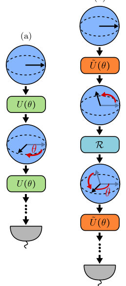
<figcaption class="paper-figure-caption"><b>Fig 1.</b> FIG. 1: (a) Sequential quantum sensing for estimating the parameter θ of parameterized unitary U(θ) which ap- plies a θ-angle rotation on the probe state. (b) Sequential sensing for noisy parameterized unitary ˜U(θ) where the noise causes a rotation that erroneously deviates from the noiseless case of U(θ). A control operation R detects and corrects the error to recover the correct θ rotation.</figcaption>
</figure>
<figure class="paper-figure-card">
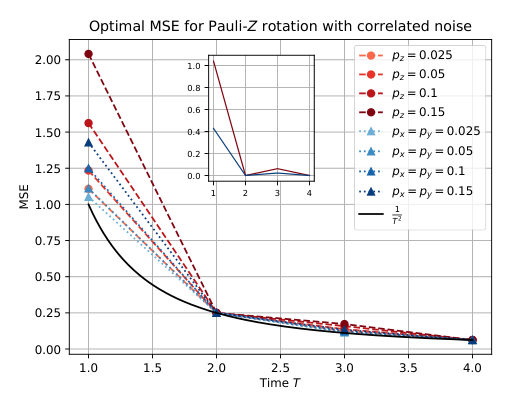
<figcaption class="paper-figure-caption"><b>Fig 2.</b> FIG. 2: Optimal mean-squared error (MSE) computed from the SDP in Theorem 1 for sequential Pauli-Z ro- tation angle estimation with strongly correlated Pauli noise. The x-axis shows the number of time steps, where a single use of the channel counts as a single time step, whereas the y-axis shows the MSE. The colored lines show the optimal MSEs for different types of correlated noise on the Z-rotation channels at different probabil- ities. Correlated Pauli X,Y,Z error probabilities are shown in the legend as px,py,pz, respectively. Red lines are MSEs in the case of noise with non-zero pz error rate (with px = py = 0) and blue lines are lower bounds in the case of noise with non-zero px = py...</figcaption>
</figure>
<figure class="paper-figure-card">
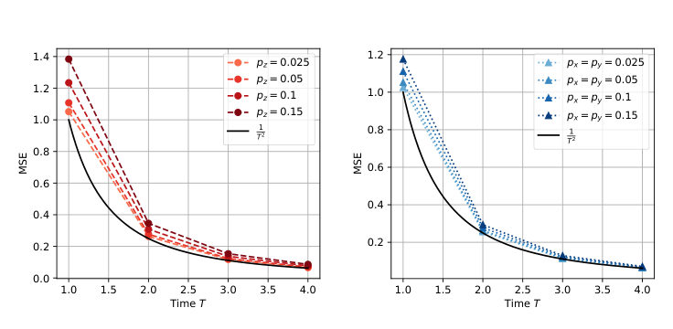
<figcaption class="paper-figure-caption"><b>Fig 3.</b> FIG. 3: Optimal mean-squared error (MSE) computed from the SDP in Theorem 1 for sequential Pauli-Z rotation angle estimation with weakly correlated Pauli noise. The x-axis shows the number of time steps, where a single use of the channel counts as a single time step, whereas the y-axis shows the MSE. In panel (a), the correlated noise applies Pauli noise channel Ez at every step with probability pz. In panel (b), the correlated noise applies Pauli noise channel Ex or Ey at every step with probability px,py, respectively. In both cases, as the noise strength p gets smaller, the MSE approaches the noiseless benchmark 1/T 2 shown by the solid black line. The finite-T separation from this...</figcaption>
</figure>
<figure class="paper-figure-card">
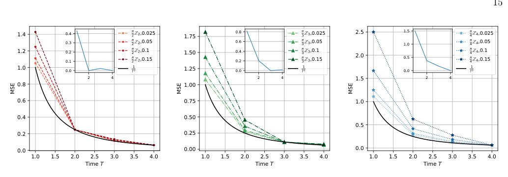
<figcaption class="paper-figure-caption"><b>Fig 4.</b> FIG. 4: Optimal mean-squared error (MSE) computed from the SDP in Theorem 1 for Pauli-Z rotations with correlated random noise direction. Panels (a), (b), and (c) correspond to l = 2,3,4, respectively. The x-axis shows the number of time steps, where a single use of the channel counts as a single time step, whereas the y-axis shows the MSE. The line labeled by π</figcaption>
</figure>
<figure class="paper-figure-card">
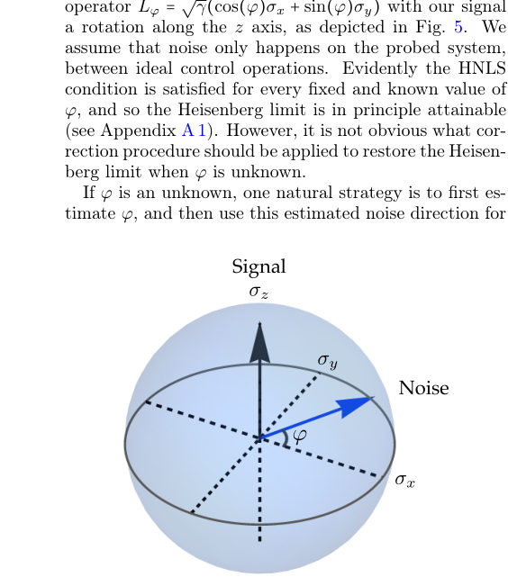
<figcaption class="paper-figure-caption"><b>Fig 5.</b> FIG. 5: Estimating θ with unknown noise charac- terized by φ. The signal is a rotation about the z axis of the Bloch sphere. The noise is characterized by an operator Lφ = √γ((cosφ)σx + (sinφ)σy) with unknown φ.</figcaption>
</figure>
</div>

<p><strong>Summary.</strong> This paper develops a powerful Semidefinite Programming (SDP) framework to establish lower bounds on the Mean-Squared Error (MSE) for estimating parameters of quantum channels through sequential probing. It generalizes existing quantum estimation bounds to account for multiple time steps and correlated noise. The results provide new, rigorous benchmarks for designing optimal quantum sensing protocols in various physical systems.</p>
<p><strong>Why it may be interesting.</strong> This work provides rigorous, computationally tractable bounds (via SDP) on the ultimate precision limits for quantum metrology in complex, realistic settings involving sequential measurements and correlated noise, which is crucial for designing practical quantum sensors.</p>
<details>
<summary>Detailed structure</summary>
<p><strong>Main problem.</strong> The paper addresses the notoriously difficult problem of finding the optimal strategy to estimate parameters of a quantum channel when the channel is probed multiple times sequentially.</p>
<p><strong>Main result.</strong> The authors propose a general lower bound for the Mean-Squared Error (MSE) of any physically implementable sequential sensing strategy, formulated as a Semidefinite Program (SDP). This bound is shown to be tight for single-parameter tasks.</p>
<p><strong>Method.</strong> The core method involves deriving an SDP-based lower bound that generalizes the Nagaoka-Hayashi bound to the regime of sequential measurements, utilizing concepts like the quantum comb formalism.</p>
<p><strong>Model / system.</strong> The model involves estimating parameters $  heta$ of a quantum channel $\Lambda_	heta$ by sequentially probing the channel multiple times ($T$ steps) using coherent ancillary systems and performing final measurements.</p>
<p><strong>Key observables.</strong> Mean-Squared Error ($  ext{MSE}_   heta$), Quantum Fisher Information ($   ext{QFI}$), and the covariance matrix of the parameter estimates.</p>
<p><strong>Important parameters / regimes.</strong> Number of time steps ($T$), number of parameters ($m$), and the specific noise model (e.g., correlated Pauli noise).</p>
<p><strong>Assumptions / limitations.</strong> The analysis assumes the existence of an optimal strategy and provides local attainability results for the SDP bound in single-parameter cases.</p>
<p><strong>Figures summary.</strong> Figures illustrate the MSE lower bound for sequential estimation tasks (e.g., Pauli-Z or X/Y rotations) under various noise levels, comparing the bound to the expected Heisenberg scaling ($1/T^2$).</p>
<p><strong>Paper structure.</strong> The paper progresses by first establishing the general SDP lower bound for sequential sensing, then applying it to specific physical scenarios like single-parameter estimation (e.g., Pauli rotations) under both independent and correlated noise models, and finally comparing multi-step vs. single-step protocols.</p>
</details>
<details>
<summary>Abstract</summary>
<p>The most general strategy for estimating parameters of a quantum channel is to probe the channel many times sequentially with the help of coherent ancillary systems. However, finding the strategy that minimizes the mean-squared error (MSE) is a notoriously hard problem, requiring optimization over the initial probe state, intermediate evolutions, final measurement, and classical postprocessing. In this work, we study how the minimum attainable MSE can be bounded from below in this setting. We propose a lower bound for the MSE of any physically implementable sequential sensing strategy that applies to estimating parameters of any physical quantum evolution, including quantum channels probed over multiple time steps under temporally correlated noise and general temporally correlated quantum processes. We show that this lower bound can be formulated as a semidefinite program (SDP). Our bound generalizes the Nagaoka-Hayashi lower bound (that applies to parameter estimation tasks with separable measurements) to the regime where the quantum channel can be accessed sequentially multiple times. For regular finite-dimensional single-parameter sequential estimation tasks admitting an optimal strategy, we show that our SDP bound is tight and provide a procedure to obtain a locally optimal strategy from the SDP optimizer. Using our optimization bound, we compute the MSE lower bound and derive new protocols for several other physically motivated problems including error-corrected quantum sensing under an unknown correlated noise model, multiparameter estimation, and estimation with qudit systems.</p>
</details>
<p><sub><a href="#top">↑ back to top</a></sub></p>

<p><a id="paper-2609.31265"></a></p>
<h3 id="steady-state-current-signatures-of-strong-light-matter-coupling-in-single-molecule-junctions"><a href="http://arxiv.org/abs/2609.31265v1">Steady--State Current Signatures of Strong Light--Matter Coupling in Single--Molecule Junctions</a></h3>
<p><strong>Authors:</strong> Kritanjan Polley, Norah M. Hoffmann<br>
<strong>Type:</strong> theory · <strong>Category:</strong> other · <strong>PDF:</strong> <a href="https://arxiv.org/pdf/2609.31265v1">https://arxiv.org/pdf/2609.31265v1</a><br>
<strong>Analysis basis:</strong> full PDF text, analyzed in chunks
<strong>Topic relevance:</strong> 🔥 <code>Keldysh / 2PI / non-Gaussian methods</code> <strong>4/5</strong> · 🔥 <code>methods for driven-dissipative</code> <strong>4/5</strong> · <code>Tavis-Cummings &amp; cavity-many-emitter</code> <strong>3/5</strong> · <code>analog quantum simulation</code> <strong>3/5</strong> · <code>driven-dissipative phase transition</code> <strong>3/5</strong> · <code>correlated / nonlocal dissipation</code> <strong>2/5</strong> · <code>non-equilibrium universality</code> <strong>2/5</strong> · <code>interference shaping light</code> <strong>1/5</strong> · <code>quantum measurements</code> <strong>1/5</strong></p>
<div class="figure-strip-hint">↔ Scroll figures horizontally</div>
<div class="paper-figures-scroll">
<figure class="paper-figure-card">
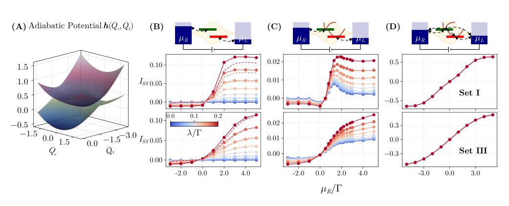
<figcaption class="paper-figure-caption"><b>Fig 1.</b> FIG. 1. (A) Adiabatic 2D potential (c.f. Eqs. (S28)-(S29)) landscape governing nuclear motion (R ≡{Qc, Qt}) in units of coupling strength (Γ). (B)-(D) Illustrate the three scenarios of the model and two model parameters examined. The top panels show a molecule between left (µR) and right (µL) electrodes, mediated by a photonic cavity (light yellow). (B) and (C) represent a model with selective connectivity between electrode and molecule, with µR connecting only to the green level and µL connecting only to the red level. In contrast, (D) shows that both electronic levels are connected to two electrodes. (B) lacks a nuclear structure, while both (C) and (D) incorporate a nuclear potential, as...</figcaption>
</figure>
<figure class="paper-figure-card">
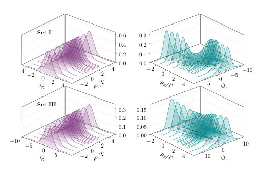
<figcaption class="paper-figure-caption"><b>Fig 2.</b> FIG. 2. The distributions of the nuclear modes at steady state for Set I &amp; III, with λ = 0.1Γ, for different bias voltages. The left side of the figure shows the Qc distributions, while the right side displays the Qt distributions. For the Qt distributions, the mean and standard deviation are indicated on the base plane by the dotted line and long-dashed boundaries, respectively.</figcaption>
</figure>
<figure class="paper-figure-card">
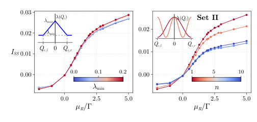
<figcaption class="paper-figure-caption"><b>Fig 3.</b> FIG. 3. The spatial dependence of λ and its impact on current. On the left, the light-matter coupling is a function of the coupling mode, and its shape of λ(Qc) is shown in the inset. We set λmax = 0.2Γ. On the right, it is dependent on the tuning mode. The dependence of λ on Qt, for the figure on the right is sinusoidal as shown in the inset, and the exact form is given in the main text. n is the mode number for the sinusoidal form of the light-matter coupling.</figcaption>
</figure>
<figure class="paper-figure-card">
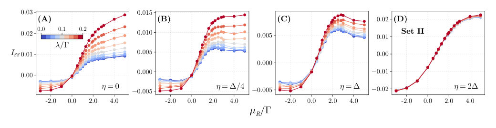
<figcaption class="paper-figure-caption"><b>Fig 4.</b> FIG. 4. Steady-state currents for varying bias voltage and light-matter coupling in the presence of nuclear modes, similar to Fig. 1, are plotted above for Set II parameters in the presence of a bath. (A) illustrates the variation for a system devoid of bath modes, akin to panel (C) in Fig. 1. (B) presents a similar distribution, but in the presence of nuclear modes where the reorganization energy is in the inverted Marcus regime. (C) exhibits the effect of coupling between the system and the bath modes at activationless crossing, whereas (D) shows the normal Marcus regime. The same colormap is used across all panels. ∆ is the diabatic energy gap of the spinless fermionic system.</figcaption>
</figure>
</div>

<p><strong>Summary.</strong> The authors demonstrate that the steady-state current flowing through a single-molecule junction acts as a sensitive electrical fingerprint of strong light-matter coupling. By using semiclassical transport methods, they show that the current is not passive but actively reflects the coherent coupling between the molecule and the photonic cavity. This establishes current measurement as a powerful tool for interpreting and controlling light-matter interactions in nanoscale junctions.</p>
<p><strong>Why it may be interesting.</strong> This work directly bridges quantum optics (strong coupling, polaritons) with condensed matter transport (junction currents), providing a novel, measurable electrical diagnostic tool for cavity QED effects in nanoscale devices.</p>
<details>
<summary>Detailed structure</summary>
<p><strong>Main problem.</strong> To determine if strong light-matter coupling leaves a measurable signature in the steady-state current of single-molecule junctions, offering a probe beyond optical spectroscopy.</p>
<p><strong>Main result.</strong> The steady-state current carries a direct, measurable signature of single-molecule strong coupling, which is sensitive to the coupling strength and its spatial profile.</p>
<p><strong>Method.</strong> The study employs a semiclassical mapping approach for nonequilibrium quantum transport, comparing results against benchmark methods like HEOM.</p>
<p><strong>Model / system.</strong> The system is a single-molecule junction in an STM-BJ setup, modeled by a Hamiltonian coupling molecular, electrode, and photonic cavity modes. The analysis incorporates environmental baths and nuclear dynamics.</p>
<p><strong>Key observables.</strong> Steady-state current (I), distributions of nuclear modes (Qc, Qt), and population dynamics.</p>
<p><strong>Important parameters / regimes.</strong> Light-matter coupling strength (λ), bias voltage ($\mu_L, \mu_R$), reorganization energy ($\eta$), and environmental coupling strength.</p>
<p><strong>Assumptions / limitations.</strong> Approximations include neglecting the dipole self-energy term and using semiclassical mappings for transport calculations.</p>
<p><strong>Figures summary.</strong> Figures illustrate current signatures under varying coupling strengths and connectivity, show distributions of nuclear modes, and compare current results across different theoretical methods (HEOM vs. semiclassical).</p>
<p><strong>Paper structure.</strong> The paper develops the model Hamiltonian, applies semiclassical mapping techniques to calculate current, and systematically tests the signature's robustness against environmental factors, connectivity, and coupling profile.</p>
</details>
<details>
<summary>Abstract</summary>
<p>Strong light-matter coupling offers exciting opportunities for controlling molecular properties, yet resolving single-molecule behavior from collective effects remains a challenge. Recent experiments in scanning tunneling microscope break junctions (STM-BJs) have demonstrated strong light-matter coupling at the single-molecule level. Because STM-BJs provide direct access to molecular-junction currents, we investigate whether strong coupling leaves a measurable fingerprint in transport, potentially probing polaritonic states beyond optical spectroscopy. Using a semiclassical mapping approach for nonequilibrium quantum transport, we find that steady-state current indeed carries a direct signature of single-molecule strong coupling. We test the robustness of this signature against electrode connectivity, nuclear motion, spatially structured electromagnetic modes, and solvent effects. While environmental factors and nuclear motion reshape the signature, the current is not a passive response but is actively influenced by coupled molecular dynamics. Our work establishes current as a tool to interpret and control strong light-matter interactions in nanoscale junctions.</p>
</details>
<p><sub><a href="#top">↑ back to top</a></sub></p>

<p><a id="paper-2609.31153"></a></p>
<h3 id="slow-fast-dynamics-of-the-mckean-model-with-stochastic-resetting-and-diffusion"><a href="http://arxiv.org/abs/2609.31153v1">Slow-fast dynamics of the McKean model with stochastic resetting and diffusion</a></h3>
<p><strong>Authors:</strong> Jude Swaby, Paul C. Bressloff<br>
<strong>Type:</strong> theory · <strong>Category:</strong> statistical mechanics · <strong>PDF:</strong> <a href="https://arxiv.org/pdf/2609.31153v1">https://arxiv.org/pdf/2609.31153v1</a><br>
<strong>Analysis basis:</strong> full PDF text, analyzed in chunks
<strong>Topic relevance:</strong> 🔥 <code>methods for driven-dissipative</code> <strong>4/5</strong> · <code>Keldysh / 2PI / non-Gaussian methods</code> <strong>3/5</strong> · <code>driven-dissipative phase transition</code> <strong>3/5</strong> · <code>non-equilibrium universality</code> <strong>3/5</strong> · <code>quantum measurements</code> <strong>2/5</strong> · <code>scars &amp; prethermalization</code> <strong>2/5</strong> · <code>Frenkel-Kontorova</code> <strong>1/5</strong> · <code>analog quantum simulation</code> <strong>1/5</strong> · <code>correlated / nonlocal dissipation</code> <strong>1/5</strong></p>
<div class="figure-strip-hint">↔ Scroll figures horizontally</div>
<div class="paper-figures-scroll">
<figure class="paper-figure-card">
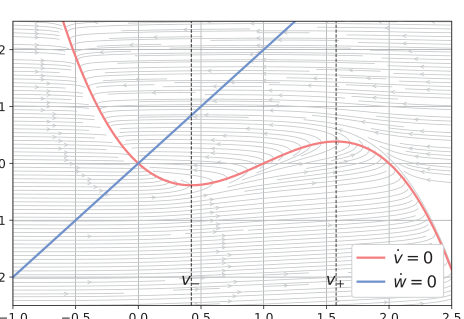
<figcaption class="paper-figure-caption"><b>Fig 1.</b> FIG. 1. FN phase-plane plot in the excitable regime, with the fast nullcline depicted in red and the slow nullcline in blue. The parameters are I0 = −1, α = 0.4, ε = 0.1, and γ = 1.0. The unique fixed point lies on the left branch of the cubic fast null- cline and is stable. The dashed vertical lines mark the turning points v−and v+.</figcaption>
</figure>
<figure class="paper-figure-card">
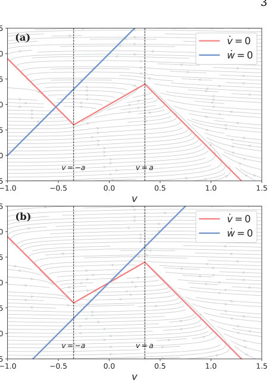
<figcaption class="paper-figure-caption"><b>Fig 2.</b> FIG. 2. McKean phase-plane plots in (a) the excitable regime with I0 = −1 and (b) the oscillatory regime with I0 = 0. The fast nullcline is depicted in red and the slow nullcline in blue. The remaining parameters are a = 0.35, ε = 0.1, γ = 0.5, m± = −2 and m0 = 1.14.</figcaption>
</figure>
<figure class="paper-figure-card">
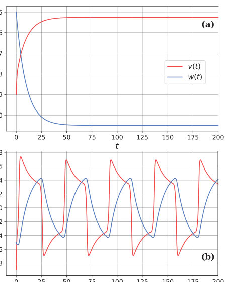
<figcaption class="paper-figure-caption"><b>Fig 3.</b> FIG. 3. Numerical time series plots of the slow and fast vari- ables in (a) the excitable regime with I0 = −1 and (b) the oscillatory regime with I0 = 0. Other parameter values are the same as Fig. 2.</figcaption>
</figure>
<figure class="paper-figure-card">
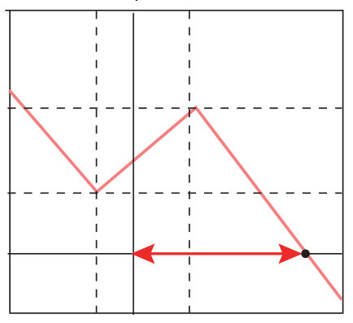
<figcaption class="paper-figure-caption"><b>Fig 4.</b> FIG. 4. Schematic diagram illustrating the support of the layer dynamics when −a &lt; vr &lt; a. The intercept of the v-nullcline w = f(v) + I0 with the horizontal line w = w is unique when w &lt; w−, where w± are the turning points of the v-nullcline. In this scenario the support of v is the interval linking the reset point vr to v+.</figcaption>
</figure>
<figure class="paper-figure-card">
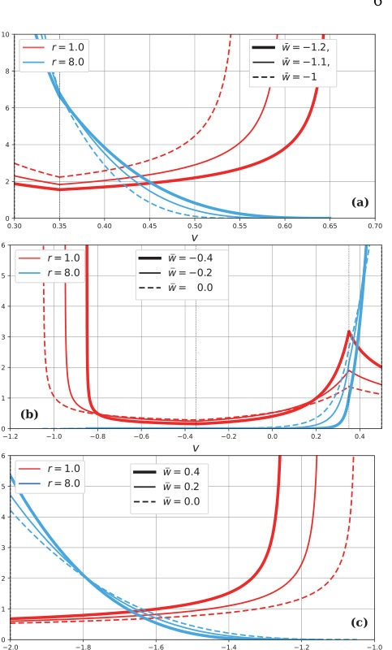
<figcaption class="paper-figure-caption"><b>Fig 5.</b> FIG. 5. Plots of p∗(v) with resetting in the non-diffusive ex- citable regime for different values of the frozen slow variable w and the resetting rate r. Other parameters are I0 = −1, a = 0.35, m± = −2 and m0 = 1.14. (a) vr = 0.3 (resetting to the middle branch), (b) vr = 0.5 (resetting to the right-hand branch), and (c) vr = −2 (resetting to the left-hand branch). As the resetting rate increases, probability accumulates more strongly near the reset point vr rather than near the fixed point v+.</figcaption>
</figure>
</div>

<p><strong>Summary.</strong> This paper analyzes the complex dynamics of the McKean model by incorporating both diffusion and stochastic resetting into a slow-fast framework. Using adiabatic approximations and Fokker-Planck methods, the authors determine how the system's long-term behavior is governed by the interplay between noise, resetting, and the system's inherent slow dynamics. This provides a theoretical understanding of noise-induced steady states in non-equilibrium systems.</p>
<p><strong>Why it may be interesting.</strong> The techniques used—analyzing non-equilibrium steady states in slow-fast systems with external stochastic driving (resetting)—are highly relevant to open quantum systems and quantum dynamics where dissipation and external noise are key components.</p>
<details>
<summary>Detailed structure</summary>
<p><strong>Main problem.</strong> The paper investigates the combined effects of stochastic resetting and diffusion on a slow-fast dynamical system described by the McKean model.</p>
<p><strong>Main result.</strong> The slow variable's long-time behavior converges to a stable fixed point dependent on diffusion, resetting rate, and reset value, or exhibits noisy oscillations in the non-diffusive case.</p>
<p><strong>Method.</strong> The analysis employs the adiabatic approximation, solving a modified Fokker-Planck equation for the fast variable's Non-Equilibrium Steady State (NESS), and then averaging this NESS to derive an equation for the slow dynamics.</p>
<p><strong>Model / system.</strong> The system is a stochastic version of the piecewise-linear McKean model, a slow-fast planar system involving a slow variable (w) and a fast variable (v). The fast variable is subjected to Gaussian white noise (diffusion D) and stochastic resetting (Poisson process rate r).</p>
<p><strong>Key observables.</strong> Non-Equilibrium Steady State (NESS) probability density, the stable fixed point of the slow variable ($w^*$), and the slow variable's time evolution (oscillations).</p>
<p><strong>Important parameters / regimes.</strong> Diffusivity (D), resetting rate (r), reset value ($v_r$), and the timescale separation parameter ($\epsilon$).</p>
<p><strong>Assumptions / limitations.</strong> The primary approximations include the adiabatic approximation (assuming fast resetting) and analyzing the system in the small-diffusion limit.</p>
<p><strong>Figures summary.</strong> Figures illustrate the phase-plane dynamics, time series showing slow variable switching, and analytical profiles of stationary branch densities in the non-diffusive slow-resetting regime.</p>
<p><strong>Paper structure.</strong> The paper first establishes the deterministic slow-fast model, then analyzes the fast-resetting regime by deriving the NESS and averaging to find the slow fixed point. It extends this to the diffusive case and finally analyzes the slow-resetting regime, deriving analytical solutions for the resulting noisy oscillations.</p>
</details>
<details>
<summary>Abstract</summary>
<p>In this paper we investigate the combined effects of stochastic resetting and diffusion on a slow--fast dynamical system given by the piecewise-linear McKean model. That is, the fast variable $v$ is subject to Gaussian white noise with effective diffusivity $D$ and is reset to a fixed value $v_r$ at a random sequence of times generated from a Poisson process with rate $r$. Assuming that resetting occurs on the fast timescale, we freeze the slow variable \(w\) under an adiabatic approximation and determine the resulting non-equilibrium stationary state (NESS) of the fast variable as the solution of a modified Fokker--Planck equation. We show that the NESS can be expressed in terms of parabolic cylinder functions, whose asymptotic behavior allows us to recover the corresponding NESS without diffusion in the small-diffusion limit. The NESS is used to derive an averaged equation for the slow dynamics, whose solution converges to a stable fixed point \(w^*\) that depends on \(D\), \(r\) and \(v_r\). This fixed point effectively determines the long-time behaviour of the full system. Finally, we analyze the regime in which resetting occurs on the same timescale as the slow variable. We show how the slow variable now undergoes noisy oscillations due to resetting-induced switching between branches of the fast nullcline and derive the corresponding NESS for $w$ in the non-diffusive case.</p>
</details>
<p><sub><a href="#top">↑ back to top</a></sub></p>

<p><a id="paper-2609.31433"></a></p>
<h3 id="angular-momentum-conservation-in-two-atom-superradiance"><a href="http://arxiv.org/abs/2609.31433v1">Angular momentum conservation in two-atom superradiance</a></h3>
<p><strong>Authors:</strong> P. R. Berman, Zeyuan Wang, A. Kuzmich<br>
<strong>Type:</strong> theory · <strong>Category:</strong> other · <strong>PDF:</strong> <a href="https://arxiv.org/pdf/2609.31433v1">https://arxiv.org/pdf/2609.31433v1</a><br>
<strong>Analysis basis:</strong> full PDF text, analyzed in chunks
<strong>Topic relevance:</strong> 🔥 <code>Dicke superradiance</code> <strong>4/5</strong> · 🔥 <code>free-space correlated emission</code> <strong>4/5</strong> · <code>correlated / nonlocal dissipation</code> <strong>3/5</strong> · <code>superradiant laser</code> <strong>3/5</strong> · <code>Keldysh / 2PI / non-Gaussian methods</code> <strong>1/5</strong> · <code>Tavis-Cummings &amp; cavity-many-emitter</code> <strong>1/5</strong> · <code>driven-dissipative phase transition</code> <strong>1/5</strong> · <code>interference shaping light</code> <strong>1/5</strong> · <code>methods for driven-dissipative</code> <strong>1/5</strong></p>
<div class="figure-strip-hint">↔ Scroll figures horizontally</div>
<div class="paper-figures-scroll">
<figure class="paper-figure-card">
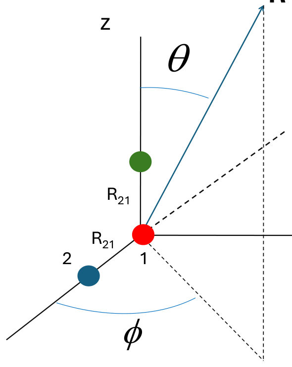
<figcaption class="paper-figure-caption"><b>Fig 1.</b> FIG. 1: A schematic representation of the geometry used in the calculation. The radiated fields</figcaption>
</figure>
<figure class="paper-figure-card">
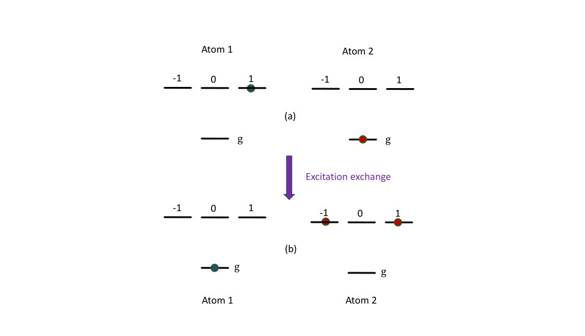
<figcaption class="paper-figure-caption"><b>Fig 2.</b> FIG. 2: Schematic representation of the excitation exchange process. (a) Atom 1 is initially in its</figcaption>
</figure>
<figure class="paper-figure-card">
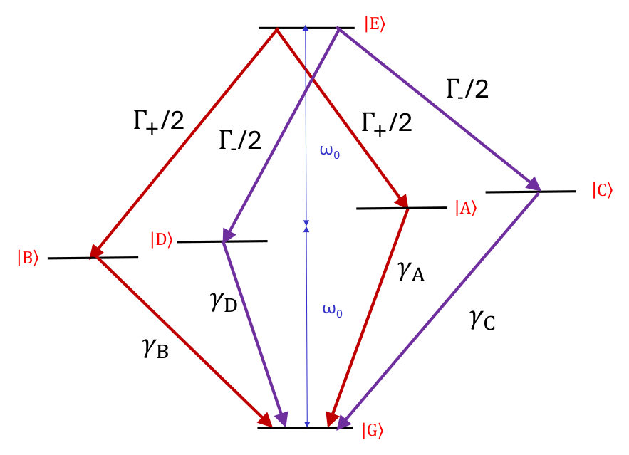
<figcaption class="paper-figure-caption"><b>Fig 3.</b> FIG. 3: Molecular basis level scheme. The intermediate state eigenfrequencies are ωA = ω0 +</figcaption>
</figure>
<figure class="paper-figure-card">
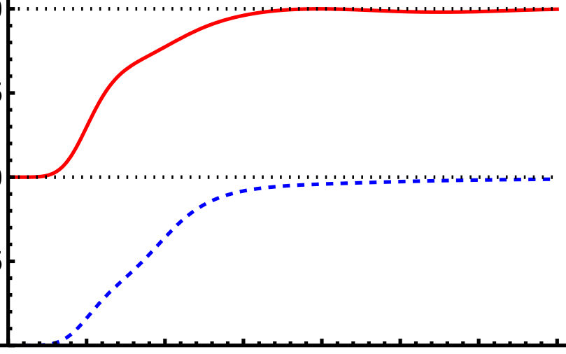
<figcaption class="paper-figure-caption"><b>Fig 4.</b> FIG. 4: Plots of the z−component of the final field angular momentum, Lfz, (in units of ℏ) as</figcaption>
</figure>
</div>

<p><strong>Summary.</strong> This theoretical study analyzes angular momentum conservation in two-atom superradiance, finding that the total angular momentum is conserved only when the orbital angular momentum of the atoms is included. By comparing results from source-field and Schrödinger picture methods, the authors demonstrate that the missing angular momentum is precisely accounted for by the atoms' orbital motion.</p>
<p><strong>Why it may be interesting.</strong> This work provides a detailed, rigorous treatment of angular momentum conservation in an open quantum system (superradiance), showing how non-local effects (orbital angular momentum) must be included for a complete picture, which is highly relevant for quantum optics.</p>
<details>
<summary>Detailed structure</summary>
<p><strong>Main problem.</strong> The paper investigates the conservation of total angular momentum during two-atom superradiance when the atoms are separated along the x-axis.</p>
<p><strong>Main result.</strong> Angular momentum is not necessarily conserved in the field alone; the missing angular momentum is accounted for by the orbital angular momentum of the two-atom system.</p>
<p><strong>Method.</strong> The authors employ two complementary theoretical approaches—a source-field approach and a Schrödinger picture approach—to calculate the final field and orbital angular momentum.</p>
<p><strong>Model / system.</strong> The system consists of two identical atoms, each with a J=0 ground state and a J=1 excited state, excited by a $\sigma^+$-polarized laser pulse. The analysis models the interaction dynamics using coupled differential equations for state amplitudes and density matrices.</p>
<p><strong>Key observables.</strong> Final angular momentum in the field ($\langle L_{	ext{field}} 
angle$), initial angular momentum in the two-atom system ($\langle L_{	ext{atoms}} 
angle$), and the final orbital angular momentum ($  ext{L}_{    ext{orb}}$).</p>
<p><strong>Important parameters / regimes.</strong> The separation distance $R_{21}$ relative to the wavelength $\lambda$ (parameter $x_0 = k_0R_{21}$), and the initial excitation conditions (Double Excitation (DE) vs. Single Excitation (SE)).</p>
<p><strong>Assumptions / limitations.</strong> The calculations assume infinitely massive atoms (neglecting atomic motion) and utilize approximations like the Rotating Wave Approximation (RWA) and Weisskopf-Wigner Approximation (WWA).</p>
<p><strong>Figures summary.</strong> Figures schematically illustrate the geometry of the two atoms on the x-axis and show the excitation exchange processes between magnetic sublevels.</p>
<p><strong>Paper structure.</strong> The paper develops the theory by deriving evolution equations for state amplitudes and density matrices, solving these equations for different initial conditions, and then calculating the final field and orbital angular momentum using both source-field and Schrödinger picture formalisms.</p>
</details>
<details>
<summary>Abstract</summary>
<p>Two-atom superradiance is studied for atoms having a J=0 ground state and a J=1 excited state. The atoms lie on the x-axis and are excited by a σ_{+}-polarized laser pulse propagating in the z-direction. We use two, complementary approaches to obtain the final angular momentum in the field, a source-field approach and a Schrodinger picture approach. Both approaches give identical answers, but it is necessary to include terms in both calculations that, at first glance, might not be expected to contribute. We show that, owing to an exchange between a state in which atom 1 is in its m=1 excited state and atom 2 is in its ground state to one in which atom 2 is in its m=-1 excited state and atom 1 in its ground state, the final angular momentum in the field is not necessarily equal to the initial angular momentum in the two-atom system. The missing angular momentum appears as orbital angular momentum of the two atoms.</p>
</details>
<p><sub><a href="#top">↑ back to top</a></sub></p>

<p><a id="paper-2609.31266"></a></p>
<h3 id="locality-and-filter-design-for-dissipative-ground-state-preparation"><a href="http://arxiv.org/abs/2609.31266v1">Locality and filter design for dissipative ground-state preparation</a></h3>
<p><strong>Authors:</strong> Samuel J. Elman<br>
<strong>Type:</strong> theory · <strong>Category:</strong> other · <strong>PDF:</strong> <a href="https://arxiv.org/pdf/2609.31266v1">https://arxiv.org/pdf/2609.31266v1</a><br>
<strong>Analysis basis:</strong> full PDF text, analyzed in chunks
<strong>Topic relevance:</strong> 🔥 <code>methods for driven-dissipative</code> <strong>4/5</strong> · <code>analog quantum simulation</code> <strong>3/5</strong> · <code>correlated / nonlocal dissipation</code> <strong>3/5</strong> · <code>driven-dissipative phase transition</code> <strong>3/5</strong> · <code>Keldysh / 2PI / non-Gaussian methods</code> <strong>2/5</strong> · <code>non-equilibrium universality</code> <strong>2/5</strong> · <code>quantum measurements</code> <strong>2/5</strong></p>
<div class="figure-strip-hint">↔ Scroll figures horizontally</div>
<div class="paper-figures-scroll">
<figure class="paper-figure-card">
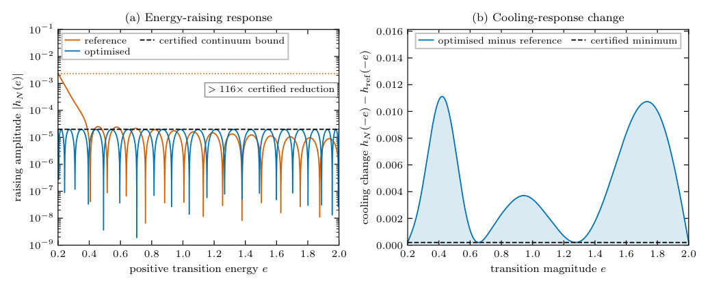
<figcaption class="paper-figure-caption"><b>Fig 1.</b> FIG. 1. Finite-filter improvement at ∆= 0.2, W = 2, on N = 81 nodes tj = jπ/5, |j| ≤40, with T = 8π and coefficient one-norm at most 1.470919199. (a) Heating response hopt of the optimised filter and its certified continuum bound, which holds at every energy in the band (Appendix B), L∆[hopt] &lt; 1.9881 × 10−5, against the Gevrey response at the gap (dotted), above 2.3073 × 10−3: an improvement greater than 116. (b) Difference between the optimised and Gevrey cooling responses; its certified lower bound between samples stays positive, so the optimised filter cools at least as strongly as the Gevrey filter.</figcaption>
</figure>
<figure class="paper-figure-card">
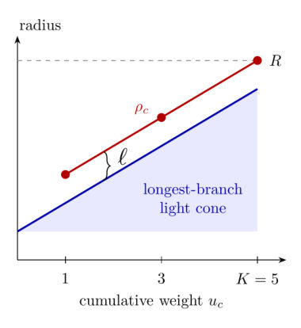
<figcaption class="paper-figure-caption"><b>Fig 2.</b> FIG. 2. Radius grading by cumulative evolution time. Ordered weights (w1, w2, w3) = (1, 2, 2) sum to K = 5 and give cumulative weights (u1, u2, u3) = (1, 3, 5), where uc = P</figcaption>
</figure>
<figure class="paper-figure-card">
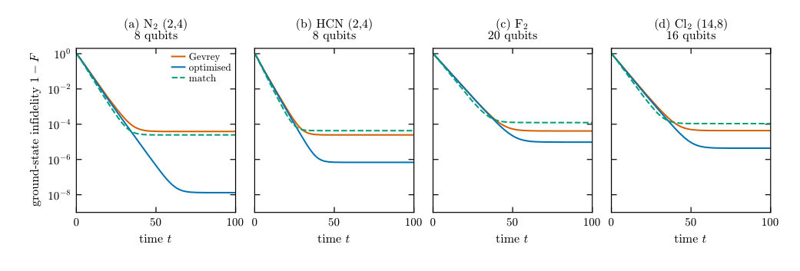
<figcaption class="paper-figure-caption"><b>Fig 3.</b> FIG. 3. Ground-state infidelity 1 −F(t), F(t) = ⟨ψ0|ρ(t)|ψ0⟩, under Lindblad evolution from the highest-energy state of the fixed-electron-number, Sz = 0 sector, for the Gevrey filter, the optimised filter at equal cost and the match filter at matched design-grid leakage (whole-band for F2), all with full-Hamiltonian branches; a molecular Hamiltonian has no locality to grade, so there is no patch panel. (a) N2 and (b) HCN in (2, 4) active spaces. (c) F2 in its full STO-3G space, sector dimension 100. (d) Cl2 in a (14, 8) active space, sector dimension 64. The F2 match curve uses the re-solved coefficients of Appendix F. All panels show 0 ≤t ≤100; the F2 and Cl2 runs continue to t = 160,...</figcaption>
</figure>
<figure class="paper-figure-card">
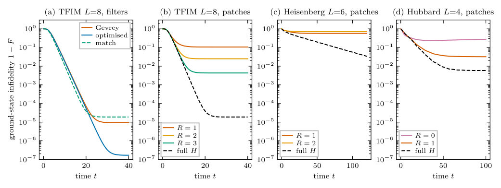
<figcaption class="paper-figure-caption"><b>Fig 4.</b> FIG. 4. Convergence of the Lindblad dynamics from a zero-overlap initial state. (a) Eight-site transverse-field Ising chain: ground-state infidelity against time for the Gevrey filter, the optimised filter at equal cost, and the match filter at matched design-grid leakage, all with full-Hamiltonian branches. The curves show comparable early relaxation and distinct late-time plateaux; the match cost is 61% of the reference. (b) The match filter with light-cone radii rj(R∗) = min{R∗, 1 + ⌈2vLR|tj|⌉} around each coupling, with vLR = 2eJ/α, bond norm J and spectral half-width α; the light cone of the longest branch spans the whole chain, so every patch shown truncates it. (c) and (d) The same...</figcaption>
</figure>
</div>

<p><strong>Summary.</strong> This paper details a novel, cost-optimized method for preparing the ground state of complex quantum systems using engineered dissipation. By combining linear programming with locality constraints derived from Lieb-Robinson bounds, the authors drastically reduce simulation errors and computational overhead compared to previous techniques. This advances the practical feasibility of quantum simulation for many-body physics.</p>
<p><strong>Why it may be interesting.</strong> This work provides concrete, resource-aware techniques for simulating open quantum systems, directly impacting the feasibility of quantum simulation algorithms for chemistry and materials science.</p>
<details>
<summary>Detailed structure</summary>
<p><strong>Main problem.</strong> The paper addresses the fundamental challenge of preparing the ground state of a quantum many-body system using dissipative dynamics, while minimizing the computational cost associated with simulating the required quantum operations.</p>
<p><strong>Main result.</strong> The authors introduce an optimized filter design that significantly reduces the worst-case heating response (leakage) by over 116-fold at equal cost, and achieves substantial cost reductions (up to 56%) across various molecular and chain systems.</p>
<p><strong>Method.</strong> The approach combines linear programming to optimize filter weights in the time domain with leveraging Lieb-Robinson bounds to restrict the required quantum evolution to local spatial patches.</p>
<p><strong>Model / system.</strong> The system involves quantum many-body Hamiltonians whose dynamics are driven to the ground state via a Lindbladian coupling to a bath. The analysis focuses on constructing and optimizing filtered jump operators that approximate the desired ground-state evolution.</p>
<p><strong>Key observables.</strong> Ground-state fidelity, worst-case heating response (leakage), and computational cost (e.g., Toffolis per jump).</p>
<p><strong>Important parameters / regimes.</strong> Spectral gap ($\Delta_{	ext{spec}}$), patch radius ($R$), and the time grid size ($T$).</p>
<p><strong>Assumptions / limitations.</strong> The cost model excludes outer loop overheads, and the locality-exploiting algorithms are distinct from the patch bounds used for the jump operators.</p>
<p><strong>Figures summary.</strong> The notes reference tables comparing costs for different filter types (e.g., TFIM, Heisenberg) and showing scaling laws based on lattice size and constraints.</p>
<p><strong>Paper structure.</strong> The paper builds from defining the problem (ground-state preparation) to proposing three key observations (LP optimization, Lieb-Robinson bounds, stability under truncation), culminating in numerical validation and cost analysis.</p>
</details>
<details>
<summary>Abstract</summary>
<p>Ground-state preparation is a fundamental challenge in quantum many-body physics, chemistry and materials science. Dissipative state-preparation techniques engineer a Lindbladian coupling to a bath that drives the system to its ground state, needing no initial overlap. Their cost is dominated by the Hamiltonian simulations inside the filtered jump operators, since each jump is a weighted sum of Heisenberg-evolved copies, or branches, of a coupling operator. We reduce this cost by following three simple observations to their logical end. First, on a fixed time grid, linear programming optimises the branch weights, trading the heating response against the circuit cost. Second, Lieb--Robinson bounds let each branch evolve on a patch whose radius grows with its duration. Third, if the dynamics converges quickly and truncation changes the jumps only slightly, the stationary state stays near the ground state even on patches smaller than the light cone. We validate our approach numerically. On a grid of $81$ evolution times, the optimised filter reduces the worst-case heating response, or leakage, more than $116$-fold at equal cost. Across fifteen molecules and six chains, the cost falls by 27 to 56\% at matched design-grid leakage; at matched cost, the molecular leakage falls by a factor of $2.9$ to $2\times10^{3}$. Density-matrix simulations show high ground-state fidelity for both filters, and on Ising and Hubbard chains the cheaper filter keeps a ground-state population of at least $0.89$ on patches of three or four sites. The same patches fail on a Heisenberg chain whose truncation error falls more slowly with patch size and whose Lindbladian gap is 12 times smaller than the Ising chain's, pointing to a role for the gap in how far patches can be truncated. At fixed radius the per-branch cost becomes independent of system size, reducing the cost of dissipative state preparation.</p>
</details>
<p><sub><a href="#top">↑ back to top</a></sub></p>

<p><a id="paper-2609.31312"></a></p>
<h3 id="causal-query-compression-for-lindblad-dynamics-optimal-queries-and-nearly-linear-local-simulation"><a href="http://arxiv.org/abs/2609.31312v1">Causal Query Compression for Lindblad Dynamics: Optimal Queries and Nearly Linear Local Simulation</a></h3>
<p><strong>Authors:</strong> Jacob Kitchen<br>
<strong>Type:</strong> theory · <strong>Category:</strong> quantum information and computing · <strong>PDF:</strong> <a href="https://arxiv.org/pdf/2609.31312v1">https://arxiv.org/pdf/2609.31312v1</a><br>
<strong>Analysis basis:</strong> full PDF text, analyzed in chunks
<strong>Topic relevance:</strong> 🔥 <code>methods for driven-dissipative</code> <strong>4/5</strong> · <code>correlated / nonlocal dissipation</code> <strong>3/5</strong> · <code>driven-dissipative phase transition</code> <strong>3/5</strong> · <code>Keldysh / 2PI / non-Gaussian methods</code> <strong>2/5</strong> · <code>non-equilibrium universality</code> <strong>2/5</strong> · <code>quantum measurements</code> <strong>2/5</strong> · <code>analog quantum simulation</code> <strong>1/5</strong></p>
<div class="figure-strip-hint">↔ Scroll figures horizontally</div>
<div class="paper-figures-scroll">
<figure class="paper-figure-card">
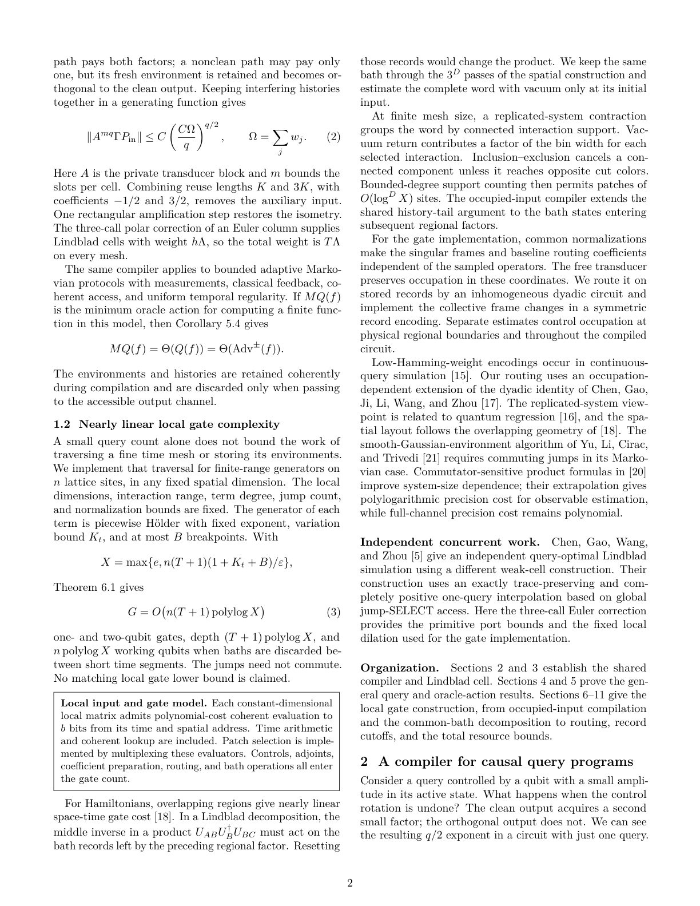
<figcaption class="paper-figure-caption"><b>Fig 1.</b> Low-resolution page preview, page 2</figcaption>
</figure>
<figure class="paper-figure-card">
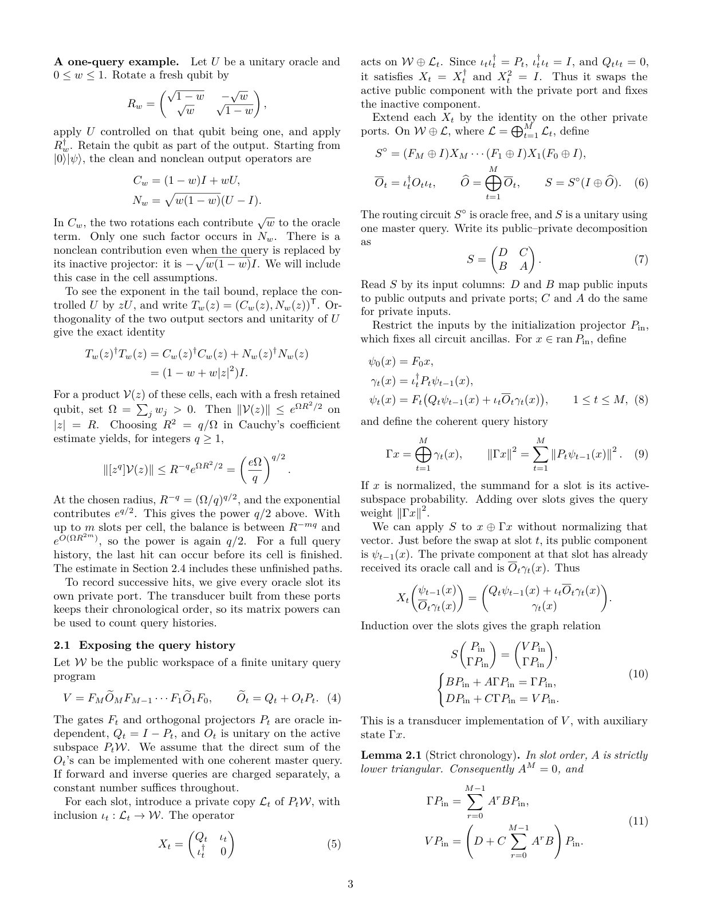
<figcaption class="paper-figure-caption"><b>Fig 2.</b> Low-resolution page preview, page 3</figcaption>
</figure>
<figure class="paper-figure-card">
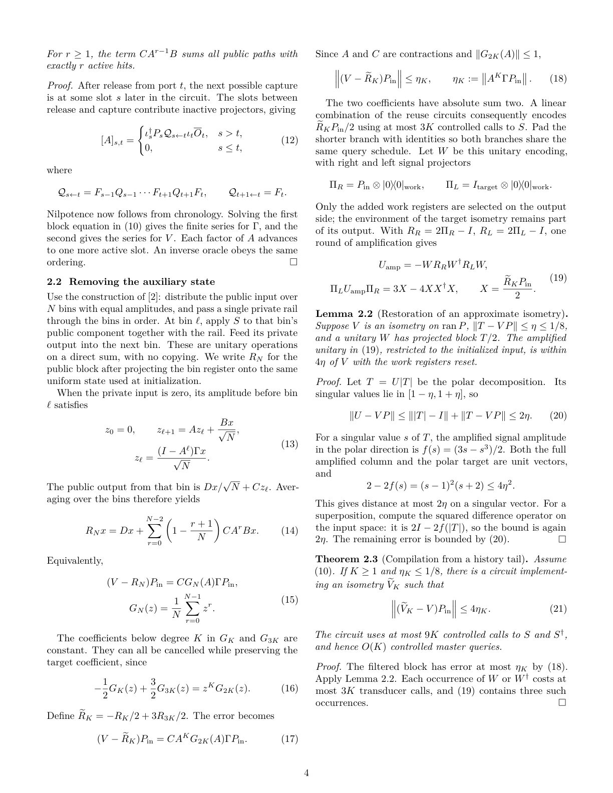
<figcaption class="paper-figure-caption"><b>Fig 3.</b> Low-resolution page preview, page 4</figcaption>
</figure>
<figure class="paper-figure-card">
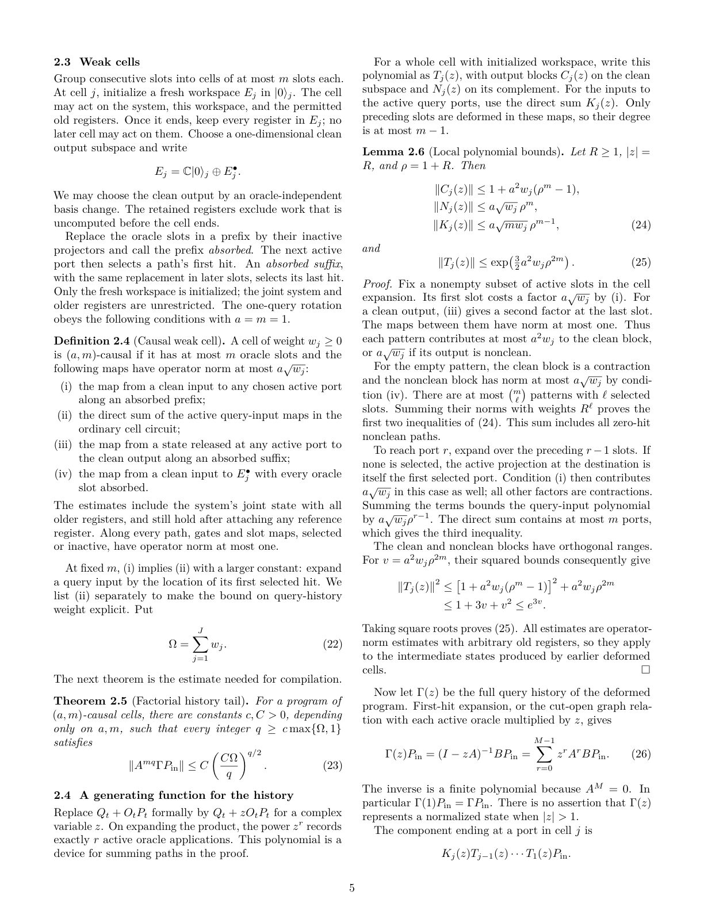
<figcaption class="paper-figure-caption"><b>Fig 4.</b> Low-resolution page preview, page 5</figcaption>
</figure>
<figure class="paper-figure-card">
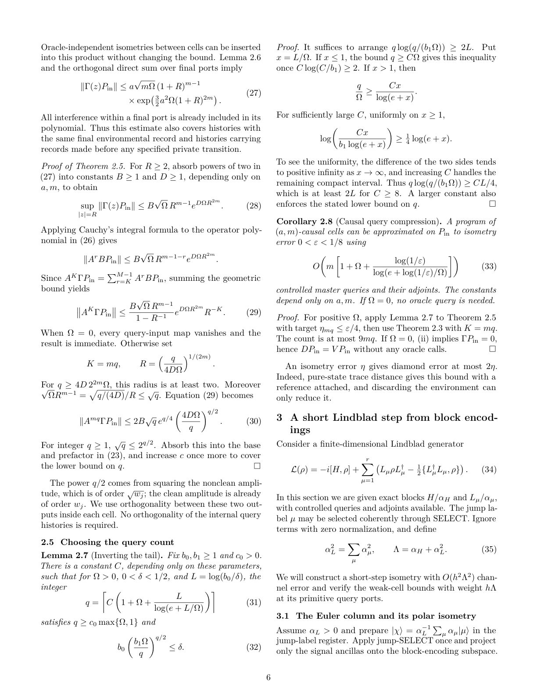
<figcaption class="paper-figure-caption"><b>Fig 5.</b> Low-resolution page preview, page 6</figcaption>
</figure>
</div>

<p><strong>Summary.</strong> This paper presents a causal query compiler for simulating time-dependent Lindblad dynamics, aiming for optimal resource usage. It derives specific query bounds for the required oracle calls and establishes a near-linear scaling for the elementary gate count when simulating local dynamics on a lattice. This advances the field by providing concrete, resource-efficient quantum algorithms for open quantum systems.</p>
<p><strong>Why it may be interesting.</strong> This work provides rigorous, resource-aware quantum circuit compilation techniques for open quantum systems, directly impacting the feasibility of simulating complex quantum dynamics on near-term quantum hardware.</p>
<details>
<summary>Detailed structure</summary>
<p><strong>Main problem.</strong> To construct a causal query compiler for simulating time-dependent Lindblad dynamics with optimal resource bounds.</p>
<p><strong>Main result.</strong> The paper establishes query bounds that are worst-case optimal for Lipschitz generators and derives a near-linear gate complexity for local simulation on lattice sites.</p>
<p><strong>Method.</strong> The approach involves developing a causal query compiler that tracks query history using techniques like clean return and active entry, combined with spatial decomposition for local gate estimation.</p>
<p><strong>Model / system.</strong> The dynamics are governed by time-dependent Lindblad master equations, $\dot{
ho} = \Lambda(t) 
ho$, where $\Lambda(t)$ is defined by a Hamiltonian $H(t)$ and jump operators $L_\mu(t)$. The system can be modeled on $n$ lattice sites.</p>
<p><strong>Key observables.</strong> Diamond-norm error ($\epsilon$), query complexity, and elementary gate count/depth/space.</p>
<p><strong>Important parameters / regimes.</strong> Total time $T$, generator variation parameters ($K_t, B$), and the time scale $    au = T(\alpha_H + \sum_\mu \alpha_\mu^2)$.</p>
<p><strong>Assumptions / limitations.</strong> The analysis assumes coherent block encodings for the Hamiltonian and jump operators, and relies on piecewise Hölder generators for the local gate bound.</p>
<p><strong>Figures summary.</strong> Not specified.</p>
<p><strong>Paper structure.</strong> The paper progresses by first establishing the query complexity bound for general Lipschitz generators, then detailing the construction of the compiler using history tracking, and finally deriving the efficient, near-linear gate complexity for finite-range dynamics on a lattice.</p>
</details>
<details>
<summary>Abstract</summary>
<p>We construct a causal query compiler for time-dependent Lindblad dynamics and establish query and gate bounds under distinct input models. With coherent block encodings of the Hamiltonian and individual jump operators, a Lipschitz generator can be simulated to diamond-norm error $\varepsilon$ using $O(1+τ+\log(1/\varepsilon)/\log(e+\log(1/\varepsilon)/τ))$ controlled queries, where $τ=T(α_H+\sum_μα_μ^2)$. This bound is independent of the time-grid size and is worst-case optimal for $τ\ge1$. Weak active entry and clean return yield a factorial history tail; combining two reuse lengths removes the auxiliary input. A three-call polar correction supplies the Lindblad cells. The compiler also characterizes the minimum oracle action of bounded adaptive Markovian protocols by quantum query complexity and the general adversary bound, up to constant factors. For finite-range dynamics on $n$ lattice sites, efficient coherent evaluation of the local matrices and fixed local parameters give $O(n(T+1)\operatorname{polylog}X)$ elementary gates, where $X=\max\{e,n(T+1)(1+K_t+B)/\varepsilon\}$, for piecewise Hölder generators with fixed exponent, local variation bound $K_t$, and at most $B$ breakpoints per term. The jumps need not commute. This gate bound includes evaluation, arithmetic, selection, routing, and environment storage. Its proof combines a spatial decomposition on a common bath, compilation on occupied inputs, and routing on compressed records. Reusing bath storage between short segments gives depth $(T+1)\operatorname{polylog}X$ and space $n\operatorname{polylog}X$.</p>
</details>
<p><sub><a href="#top">↑ back to top</a></sub></p>

<p><a id="paper-2609.31474"></a></p>
<h3 id="spatiotemporal-non-hermitian-skin-effect-with-floquet-engineered-ultracold-atoms"><a href="http://arxiv.org/abs/2609.31474v1">Spatiotemporal Non-Hermitian Skin Effect with Floquet-Engineered Ultracold Atoms</a></h3>
<p><strong>Authors:</strong> Weijie Liang, Weiping Zhang, Keye Zhang<br>
<strong>Type:</strong> both · <strong>Category:</strong> other · <strong>PDF:</strong> <a href="https://arxiv.org/pdf/2609.31474v1">https://arxiv.org/pdf/2609.31474v1</a><br>
<strong>Analysis basis:</strong> full PDF text, analyzed in chunks
<strong>Topic relevance:</strong> 🔥 <code>analog quantum simulation</code> <strong>4/5</strong> · <code>driven-dissipative phase transition</code> <strong>3/5</strong> · <code>Keldysh / 2PI / non-Gaussian methods</code> <strong>2/5</strong> · <code>methods for driven-dissipative</code> <strong>2/5</strong> · <code>non-equilibrium universality</code> <strong>2/5</strong> · <code>correlated / nonlocal dissipation</code> <strong>1/5</strong></p>
<div class="figure-strip-hint">↔ Scroll figures horizontally</div>
<div class="paper-figures-scroll">
<figure class="paper-figure-card">
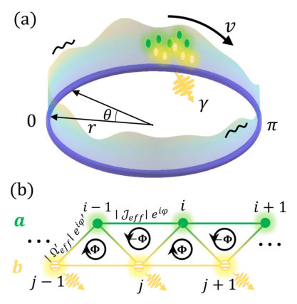
<figcaption class="paper-figure-caption"><b>Fig 1.</b> FIG. 1. (a) Ultracold atoms rotating at velocity v in a ring trap of radius r, subjected to a time-periodic spatial pertur- bation (shaded cylinder with a modulated top edge). Two internal atomic states are coupled, with state |ψb⟩(striped circle) subject to dissipation at rate γ. (b) Zigzag ladder syn- thesized by the driving protocol of (a) in the Floquet phase space. Clockwise and counterclockwise circulations around each triangular plaquette acquire opposite geometric phases ±Φ (circled arrows). The upper and lower legs denote the internal states |ψa⟩and |ψb⟩, respectively.</figcaption>
</figure>
<figure class="paper-figure-card">
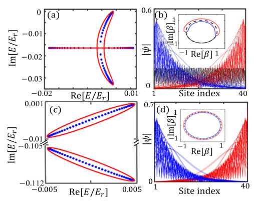
<figcaption class="paper-figure-caption"><b>Fig 2.</b> FIG. 2. Complex energy spectra under PBC (red solid) and OBC (blue dotted) for (a) γ = 3|Ω′ R| and (c) γ = 10|Ω′ R|. (b),(d) Spatial profiles of OBC eigenstates |ψa,b|2 correspond- ing to (a) and (c), respectively. Insets: GBZ in the complex β-plane (blue/red solid) and the unit circle (black dashed). Parameters: |Jeff| = 0.002Er, ℏ|Ω′ eff| = 5.5|Jeff|, φ = 1.47, φ′ = −2.25, s = 40, and Er = ℏ2s2/(2Mr2).</figcaption>
</figure>
<figure class="paper-figure-card">
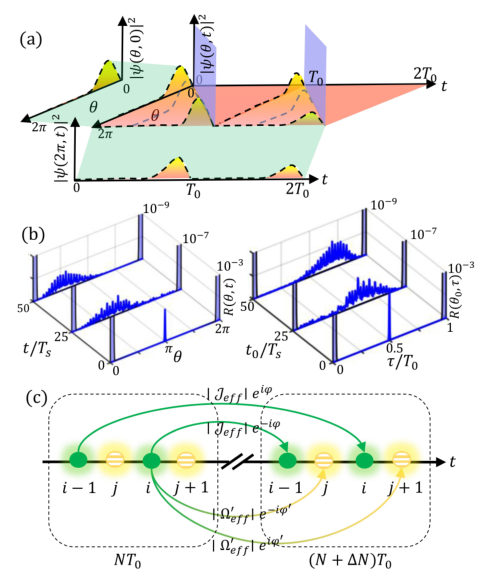
<figcaption class="paper-figure-caption"><b>Fig 3.</b> FIG. 3. (a) Spatiotemporal NHSE dynamics with skin-mode wave functions mapped onto temporal and spatial domains. (b) Probability decay rate distributions. Left: spatial dis- tribution R(θ, t) versus θ ∈[0, 2π) at stroboscopic times t = 0, 25Ts, amd 50Ts. Right: intra-period distribution R(θ0, t0 +τ) with τ ∈[0, T0) at a fixed position θ0 = 0, where t0 takes the same stroboscopic times. Blue shaded regions denote the effective boundaries in both panels. Parameters are: Ω= 200Er/ℏ, ω = sΩ, ΩR = 0.2Er/ℏ, ωs = 0.5Er/ℏ, A1 = 0.95, A2 = 1.5, Vs = Er, γ = 0.05Er/ℏ, with recoil en- ergy Er = ℏ2s2/(2Mr2) and s = 40. (c) Schematic of causal temporal hopping, where the forward arrow of time strictly...</figcaption>
</figure>
</div>

<p><strong>Summary.</strong> This paper pioneers the concept of spatiotemporal Non-Hermitian Skin Effect (NHSE) using ultracold atoms driven by time-periodic potentials. By mapping the system dynamics into a Floquet phase space, the authors show that the NHSE can be engineered by coupling spatial and temporal degrees of freedom. This opens a powerful, boundary-free route to studying non-Hermitian topology in time.</p>
<p><strong>Why it may be interesting.</strong> This work directly applies advanced concepts from non-Hermitian physics (NHSE) to a highly controllable, state-of-the-art platform (ultracold atoms), providing a novel route to engineering time-dependent topological phenomena.</p>
<details>
<summary>Detailed structure</summary>
<p><strong>Main problem.</strong> The primary goal is to generalize the Non-Hermitian Skin Effect (NHSE) from spatial dimensions to the genuine spatiotemporal domain.</p>
<p><strong>Main result.</strong> The authors establish a unified spatiotemporal paradigm for NHSE using Floquet engineering, demonstrating that the effect manifests as time-domain nonreciprocity and periodic temporal funneling.</p>
<p><strong>Method.</strong> The study employs a semiclassical Floquet-phase-space (FPS) approach, deriving effective Hamiltonians and analyzing the resulting complex energy spectra under both periodic and open boundary conditions.</p>
<p><strong>Model / system.</strong> The system utilizes an ultracold atomic gas trapped in a ring and subjected to time-periodic driving potentials (Floquet engineering). The dynamics are analyzed by mapping the system onto the FPS, which treats time as a synthetic spatial dimension.</p>
<p><strong>Key observables.</strong> Time-domain nonreciprocity, periodic temporal funneling, complex energy spectra loops, and the tunability of skin locations.</p>
<p><strong>Important parameters / regimes.</strong> Dissipation ($\gamma$), geometric phase ($\Phi$), and the driving frequency ($\Omega$).</p>
<p><strong>Assumptions / limitations.</strong> Interatomic collisions are neglected, and the analysis relies on specific approximations like the secular approximation and the tight-binding description in the FPS.</p>
<p><strong>Figures summary.</strong> Figures illustrate the physical setup (ring trap), the synthesized zigzag ladder in the FPS, and dynamics showing probability accumulation (spatial projection) and time-domain funneling (temporal projection).</p>
<p><strong>Paper structure.</strong> The paper progresses by first introducing the concept of spatiotemporal NHSE, deriving the effective Hamiltonian in the FPS, and then analyzing the consequences of non-zero geometric phase and dissipation on both spatial and temporal projections.</p>
</details>
<details>
<summary>Abstract</summary>
<p>Non-Hermitian skin effect, the accumulation of bulk eigenstates at edges under open boundary conditions, has been observed across classical, quantum, and synthetic platforms. Whether it can be generalized to the genuine time dimension remains open. We propose a spatiotemporal NHSE in the Floquet phase space via Floquet engineering of a ring-trapped ultracold atomic gas. Placing spatial and temporal degrees of freedom on an equal footing, we show that a single parent skin effect projects onto either domain. The spatial projection yields an NHSE with arbitrarily tunable skin locations, eliminating the need for physical open boundaries. The temporal projection gives time-domain nonreciprocity and periodic temporal funneling, consistent with causality. This establishes a unified spatiotemporal paradigm for NHSE and opens a route to non-Hermitian topological physics in time.</p>
</details>
<p><sub><a href="#top">↑ back to top</a></sub></p>

<p><a id="paper-2609.31598"></a></p>
<h3 id="scalable-hybrid-device-architecture-on-thin-film-lithium-tantalate-for-long-distance-quantum-network-nodes-with-atomic-frequency-comb-quantum-memories"><a href="http://arxiv.org/abs/2609.31598v1">Scalable Hybrid Device Architecture on Thin-Film Lithium Tantalate for Long Distance Quantum Network Nodes with Atomic Frequency Comb Quantum Memories</a></h3>
<p><strong>Authors:</strong> Ayed Sayem, Towsif Taher<br>
<strong>Type:</strong> both · <strong>Category:</strong> quantum information and computing · <strong>PDF:</strong> <a href="https://arxiv.org/pdf/2609.31598v1">https://arxiv.org/pdf/2609.31598v1</a><br>
<strong>Analysis basis:</strong> full PDF text, analyzed in chunks
<strong>Topic relevance:</strong> 🔥 <code>QC/QI experiment</code> <strong>4/5</strong> · <code>quantum optics experiment</code> <strong>3/5</strong> · <code>analog quantum simulation</code> <strong>2/5</strong> · <code>Tavis-Cummings &amp; cavity-many-emitter</code> <strong>1/5</strong> · <code>driven-dissipative phase transition</code> <strong>1/5</strong> · <code>quantum measurements</code> <strong>1/5</strong></p>
<div class="figure-strip-hint">↔ Scroll figures horizontally</div>
<div class="paper-figures-scroll">
<figure class="paper-figure-card">
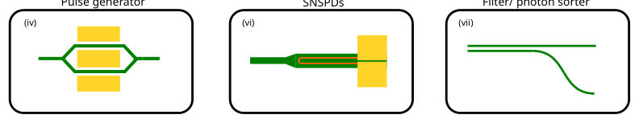
<figcaption class="paper-figure-caption"><b>Fig 1.</b> FIG. 1. (a) Schematic of the unit cell of the proposed device architecture for on-chip quantum communication link. (b) Block diagram of three nodes, here each node is connected to the neighboring ones through optical fibers. (c) Simplified schematic of entangled photon sources (EPS), (ii) switch (iii) hybrid quantum memory (HQM) (iv) pulse generator (PG), (v) superconducting nanowire single-photon detectors (SNSPDs), (vi) filter/ photon sorter).</figcaption>
</figure>
<figure class="paper-figure-card">
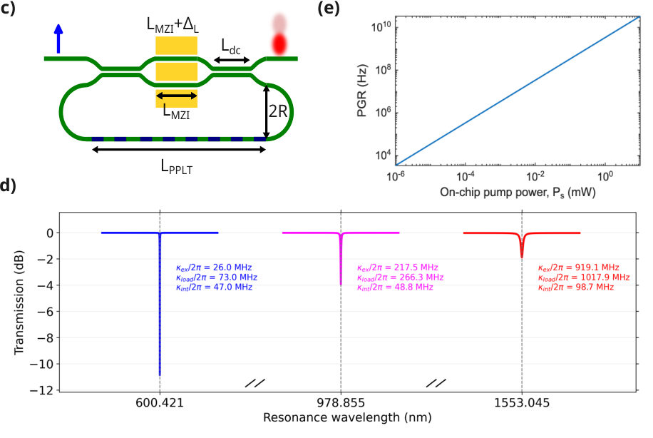
<figcaption class="paper-figure-caption"><b>Fig 2.</b> FIG. 2. (a) Energy conversion diagram for the photon pair generation with spontaneous parametric down-conversion using three wave mixing process. (b) Idler photon wavelength as a function of the pump wavelength with signal photon fixed at λQM = 978.85 nm, the shaded regions are represent the O-band and C-band. (c) Schematic of the PP-MRZI entangled photon pair source. (d) Simulated transmission from the device for the three modes with the corresponding coupling (loss) rates, external coupling rate, κex, intrinsic coupling rate, κint, and loaded coupling rate, κload. (e) Photon pair generation rate as a function of on-chip pump power. Here, the device parameters used in the simulation are,...</figcaption>
</figure>
<figure class="paper-figure-card">
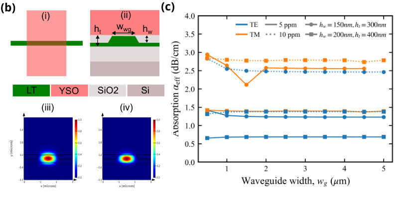
<figcaption class="paper-figure-caption"><b>Fig 3.</b> FIG. 3. Hybrid YSO waveguide memory. (a) Simplified hyperfine-level structure of 171Yb3+ : Y2SiO5, indicating the 979-nm AFC optical transition, the optical control transition, and the ground-state spin-wave coherence used for on-demand storage. (b) Cross sections of the two hybrid YSO–TFLT waveguide geometries considered here, together with representative fundamental TE-mode intensity profiles. (c) Effective Yb absorption coefficient, αeff, as a function of waveguide width, wg, for TE and TM modes, for Yb concentrations of 5 and 10 ppm and the waveguide geometries indicated in the legend. The simulated absorption remains large over a broad range of waveguide widths, enabling strong...</figcaption>
</figure>
<figure class="paper-figure-card">
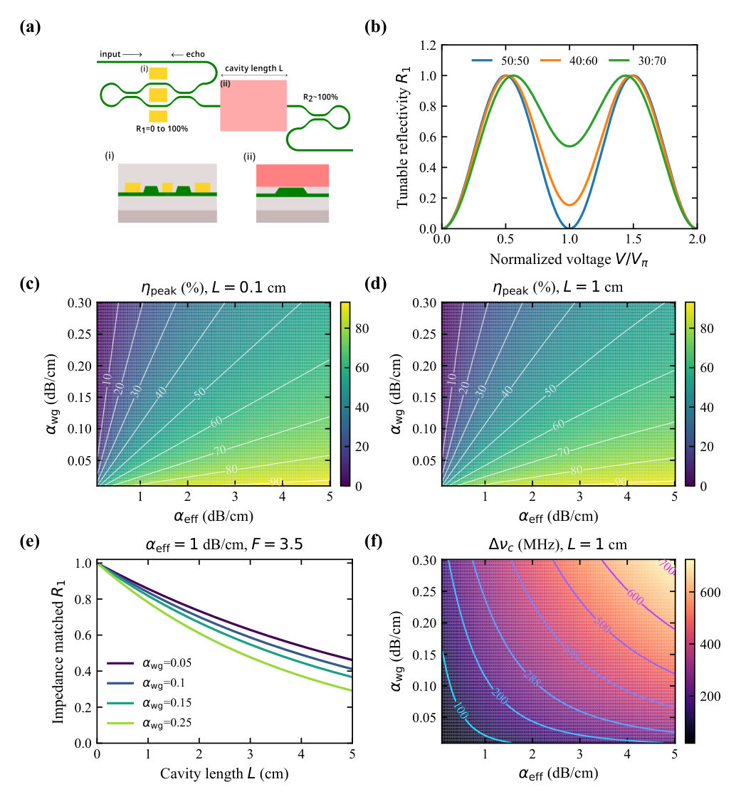
<figcaption class="paper-figure-caption"><b>Fig 4.</b> FIG. 4. Tunable cavity design and performance of the integrated AFC quantum memory. (a) Schematic of the proposed cavity architecture, where a tunable Mach–Zehnder-interferometer-based input coupler controls the effective front-mirror reflectivity R1, while the back reflector is taken to be R2 = 100%. Insets show the corresponding cross-sectional device geometries. (b) Tunable reflectivity R1 as a function of normalized drive voltage V/Vπ for different directional-coupler splitting ratios. (c,d) Peak AFC memory efficiency ηpeak as a function of effective AFC absorption αeff and waveguide propagation loss αwg for cavity lengths L = 0.1 cm and L = 1 cm, respectively. (e) Impedance-matched...</figcaption>
</figure>
<figure class="paper-figure-card">
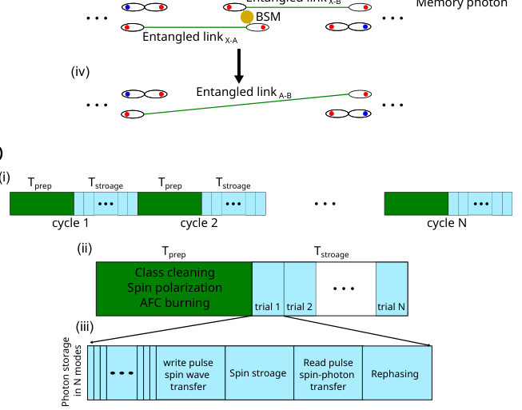
<figcaption class="paper-figure-caption"><b>Fig 5.</b> FIG. 5. Schematic of the end to end entanglement link. Each node is connected to the neighboring ones through the flying photons from EPS from each node. (i)-(iv) Example entanglement link between node A and node B through node X. Successful BSMs of the telecom photons between node A-X and X-B establish the entanglement between the memory photons between node A-X and X-B. BSM of the extracted memory photons entangle the memory photons at node A and B establishing the entanglement between node A and B. (b) Timing sequence for the AFC-based quantum memory operation. (i) The memory is operated periodically over multiple cycles, where each cycle consists of a preparation stage, Tprep, followed...</figcaption>
</figure>
</div>

<p><strong>Summary.</strong> This paper proposes a scalable hybrid device architecture for quantum network nodes by integrating rare-earth-ion atomic frequency comb quantum memories into thin-film lithium tantalate (TFLT) photonic circuits. By selecting TFLT, the authors overcome scalability challenges associated with other materials, presenting a viable pathway for building large-scale quantum communication infrastructure.</p>
<p><strong>Why it may be interesting.</strong> This work directly addresses the engineering bottleneck in quantum networking by proposing a specific, manufacturable material stack (TFLT/YSO) to integrate quantum memories, which is crucial for advancing quantum information processing beyond lab demonstrations.</p>
<details>
<summary>Detailed structure</summary>
<p><strong>Main problem.</strong> The primary challenge is realizing practical, scalable quantum networks by integrating quantum memories with robust, chip-scale photonic circuits.</p>
<p><strong>Main result.</strong> The authors propose a promising and scalable hybrid architecture using thin-film lithium tantalate (TFLT) nanophotonic circuits coupled with ytterbium-doped yttrium orthosilicate (Yb:YSO) crystals.</p>
<p><strong>Method.</strong> The work involves a systematic investigation and comparison of various material platforms (e.g., TFLT vs. TFLN) to determine the best combination for hybrid integration, supported by rate and fidelity calculations.</p>
<p><strong>Model / system.</strong> The system is a hybrid quantum node combining a low-loss photonic circuit (optical routing layer) made of TFLT with a rare-earth-doped crystal (quantum memory layer) containing $  ext{Yb}^{3+}$ ions.</p>
<p><strong>Key observables.</strong> Forward readout efficiency ($\approx 19\%$), spin coherence times (up to seconds), and calculated quantum network rates and fidelities.</p>
<p><strong>Important parameters / regimes.</strong> TFLT's superior DC-bias stability under cryogenic conditions, and the ability to achieve low-loss coupling between the chip and the memory crystal.</p>
<p><strong>Assumptions / limitations.</strong> The analysis relies on modeling the quantum network link using specific parameters for source statistics (e.g., two-mode-squeezed-vacuum) and assumed efficiencies for components like the Bell-state measurement.</p>
<p><strong>Figures summary.</strong> The notes reference tables comparing material properties (Table I) and comparing material platforms (Table II), and a final table (TABLE IV) detailing parameters for rate and fidelity calculations in the quantum network link.</p>
<p><strong>Paper structure.</strong> The paper progresses by identifying the need for scalable quantum networks, reviewing limitations of existing platforms (diamond, bulk crystals), proposing the hybrid TFLT-YSO architecture, detailing the material selection process (favoring TFLT over TFLN), and finally quantifying the system performance using detailed rate and fidelity calculations.</p>
</details>
<details>
<summary>Abstract</summary>
<p>Scalable photonic circuits are essential for realizing practical quantum networks beyond proof-of-principle demonstrations. Although diamond-based integrated photonics has been extensively investigated over the past two decades for quantum networking applications, its integration into scalable photonic platforms remains challenging. Quantum memories based on rare-earth-ion atomic frequency combs (AFCs) offer an attractive alternative; however, most demonstrations to date have relied on bulk free-space crystals, limiting their scalability for practical implementations. In this work, we systematically investigate the potential for hybrid integration of AFC-based quantum memories with a scalable integrated photonic platform. We propose a device architecture combining thin-film lithium tantalate (TFLT) nanophotonic circuits with ytterbium-doped yttrium orthosilicate (Yb:YSO) crystals for long-distance quantum communication. Our analysis shows that the hybrid TFLT-YSO platform offers a promising and scalable pathway toward integrated quantum memories and, ultimately, large-scale quantum networks.</p>
</details>
<p><sub><a href="#top">↑ back to top</a></sub></p>

<p><a id="paper-2609.31280"></a></p>
<h3 id="quantum-environment-afterglow-from-broadband-excitation-spectroscopy-in-superconducting-qubits"><a href="http://arxiv.org/abs/2609.31280v1">Quantum environment afterglow from broadband excitation spectroscopy in superconducting qubits</a></h3>
<p><strong>Authors:</strong> J. R. Guimarães, Y. Liu, Y. Gao, Y. Haddad, A. Galicia, D. A. Volkov, J. T. Schmieder, H. Bhardwaj, M. Neis, J. Cereijo, M. Jerger, P. A. Bushev, R. Barends<br>
<strong>Type:</strong> both · <strong>Category:</strong> quantum information and computing · <strong>PDF:</strong> <a href="https://arxiv.org/pdf/2609.31280v1">https://arxiv.org/pdf/2609.31280v1</a><br>
<strong>Analysis basis:</strong> full PDF text, analyzed in chunks
<strong>Topic relevance:</strong> 🔥 <code>QC/QI experiment</code> <strong>4/5</strong> · <code>methods for driven-dissipative</code> <strong>2/5</strong> · <code>quantum measurements</code> <strong>2/5</strong> · <code>correlated / nonlocal dissipation</code> <strong>1/5</strong> · <code>driven-dissipative phase transition</code> <strong>1/5</strong> · <code>quantum optics experiment</code> <strong>1/5</strong></p>
<div class="figure-strip-hint">↔ Scroll figures horizontally</div>
<div class="paper-figures-scroll">
<figure class="paper-figure-card">
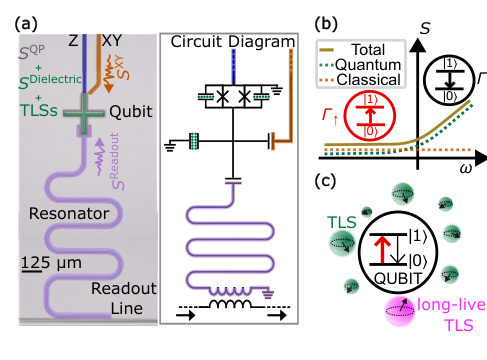
<figcaption class="paper-figure-caption"><b>Fig 1.</b> FIG. 1. (a) An optical-microscope image of the flux-tunable transmon together with its equivalent circuit. The qubit envi- ronment contains extrinsic noise from the drive line (orange) and the readout line (purple). Internal noise originates from TLSs (green) and quasiparticles (gray). (b) Schematic of the total noise PSD (solid olive line), decomposed into classical noise (dashed orange line) and quantum noise (dashed green line). Negative (positive) frequency corresponds to the exci- tation (relaxation) process, characterized by the rate Γ↑(Γ↓). The excitation process used to disentangle these noise sources is indicated in red. (c) Schematic of a fuzzy TLS environment. The long-lived TLS...</figcaption>
</figure>
<figure class="paper-figure-card">
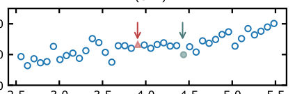
<figcaption class="paper-figure-caption"><b>Fig 2.</b> FIG. 2. (a) Measured P1 as a function of f and ∆t after applying excitation spectroscopy. The inset shows the pulse sequence. (b) Example 1d slices for the hot region (red trian- gles) and the cold region (teal circles). (c) Extracted Γ↑and Γ↓as a function of f (yellow circles). Here Γ↑corresponds to the negative frequency, while Γ↓corresponds to the positive frequency. The modeled Γ from classical noise is shown as a red dashed line. The fitted Γ from quantum noise is plotted as a green dashed line. (d) Effective temperature as a func- tion of qubit frequency.</figcaption>
</figure>
<figure class="paper-figure-card">
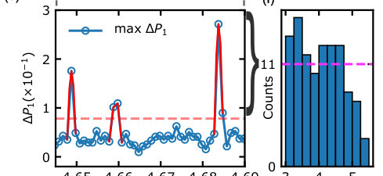
<figcaption class="paper-figure-caption"><b>Fig 3.</b> FIG. 3. (a) Pulse sequence used to separate Marko- vian and non-Markovian environments. It consists of an environmental-pump operation followed by a probe operation using excitation spectroscopy. The red dotted arrows signify the interaction between the qubit, the TLS and the environ- ment. (b) Measured results are shown as ∆P1 versus f and ∆t. Here, ∆P1 denotes the measured P1 after subtraction of the thermal excitation background. (c) A zoomed-in plot of ∆P1 versus f and ∆t is shown. (d) Example 1d slices of ∆P1 versus ∆t for Markovian (cyan circles) and non-Markovian (magenta triangles) environments. (e) The maximum ∆P1 for each frequency is plotted as blue circles. The extracted peaks...</figcaption>
</figure>
<figure class="paper-figure-card">
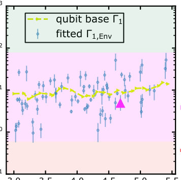
<figcaption class="paper-figure-caption"><b>Fig 4.</b> FIG. 4. (a) Pulse sequence used to extract T1,Env. The red dotted arrows signify the interaction among the qubit, the TLS and the environment. (b) Measured results are shown as P1 versus f and ∆t. (c) A zoomed-in plot of P1 versus f and ∆t. (d) Example 1d slices of P1 versus ∆t for Markovian (cyan circles) and non-Markovian (magenta triangles) envi- ronments. (e) The measured Γ1,Env versus f is shown as the blue circles with error bars obtained from the fit. The yellow dashed line represents the qubit baseline Γ1. The Marko- vian regime is defined by an environmental relaxation rate sufficiently large that the excitation decays before being re- excited by the qubit, precluding data points...</figcaption>
</figure>
</div>

<p><strong>Summary.</strong> This research introduces time-resolved broadband spectroscopy to overcome limitations in characterizing superconducting qubit environments. By probing excitation dynamics, the authors successfully reconstruct the noise spectrum and identify long-lived Two-Level Systems (TLSs). The findings demonstrate that these TLSs induce non-Markovian noise, presenting a critical roadblock for achieving fault-tolerant quantum computation.</p>
<p><strong>Why it may be interesting.</strong> This work provides a detailed, experimental roadmap for characterizing non-Markovian noise sources in superconducting qubits, directly impacting the feasibility and error budgeting for quantum computation architectures.</p>
<details>
<summary>Detailed structure</summary>
<p><strong>Main problem.</strong> Characterizing the quantum environment of superconducting qubits is crucial for fault-tolerant computation, but traditional methods fail to fully explore the excitation dynamics.</p>
<p><strong>Main result.</strong> The study reveals that long-lived Two-Level Systems (TLSs) are intrinsic to the environment, causing non-Markovian dynamics that can limit gate fidelity and require new characterization techniques.</p>
<p><strong>Method.</strong> The authors employ time-resolved broadband excitation spectroscopy, combined with postselection and feed-forward, to reconstruct the full noise power spectral density and probe environmental memory effects.</p>
<p><strong>Model / system.</strong> The system is a frequency-tunable transmon superconducting qubit coupled to an environment containing intrinsic noise sources, primarily TLSs. The analysis uses master equations and time-dependent population measurements to model the qubit-TLS interaction.</p>
<p><strong>Key observables.</strong> Qubit excitation spectrum, full noise power spectral density (PSD), effective temperature ($T_{eff}$), and environmental memory time ($T_{1,Env}$).</p>
<p><strong>Important parameters / regimes.</strong> TLS relaxation times spanning microseconds to milliseconds; coupling strength ($g_{q-TLS}$); non-Markovianity.</p>
<p><strong>Assumptions / limitations.</strong> The analysis assumes the ability to separate environmental contributions from intrinsic qubit decay, and that the coupling strength is sufficient to populate TLSs for detection.</p>
<p><strong>Figures summary.</strong> Figures illustrate the setup, the decomposition of total noise PSD into classical and quantum components, and time-dependent measurements ($\Delta P_1$ vs $\Delta t$) used to distinguish Markovian from non-Markovian environmental coupling.</p>
<p><strong>Paper structure.</strong> The paper progresses from identifying the limitation of standard relaxation measurements to introducing broadband spectroscopy. It then details the analysis to separate noise sources, quantify the impact of long-lived TLSs, and concludes by proposing methods to bypass these environmental roadblocks.</p>
</details>
<details>
<summary>Abstract</summary>
<p>Understanding the qubit environment is central to fault-tolerant superconducting quantum computation. Characterization typically relies on relaxation, leaving excitation largely underexplored. Here, we access this information with time-resolved broadband excitation spectroscopy. The resulting qubit excitation spectrum reveals a highly structured landscape, interspersed with cold regions. Combined with postselection, this technique enables full reconstruction of the noise power spectral density (PSD) and separates quantum from classical noise. With feed-forward, it exposes long-lived two-level-systems (TLSs), whose relaxation times span tens of microseconds to milliseconds - uncovering an intrinsic link between the qubit-TLS coupling and TLS relaxation. The data suggest that the long-lived TLSs are intrinsic to the qubit environment, and can cause excitation that lasts for many qubit operation cycles. Consequently, the environment retains a memory of prior dynamics, and properties like gate fidelity become non-Markovian and protocol-dependent. The presented approach enables identifying and bypassing the hidden roadblocks formed by long-lived TLSs in fault-tolerant quantum computation.</p>
</details>
<p><sub><a href="#top">↑ back to top</a></sub></p>

<p><a id="paper-2609.31068"></a></p>
<h3 id="feedback-cooling-of-a-levitated-nanoparticle-in-a-radially-polarized-vector-beam-trap"><a href="http://arxiv.org/abs/2609.31068v1">Feedback cooling of a levitated nanoparticle in a radially polarized vector beam trap</a></h3>
<p><strong>Authors:</strong> Felipe Almeida, M. Rademacher, J. M. H. Gosling, P. F. Barker<br>
<strong>Type:</strong> experiment · <strong>Category:</strong> other · <strong>PDF:</strong> <a href="https://arxiv.org/pdf/2609.31068v1">https://arxiv.org/pdf/2609.31068v1</a><br>
<strong>Analysis basis:</strong> full PDF text, analyzed in chunks
<strong>Topic relevance:</strong> 🔥 <code>quantum measurements</code> <strong>4/5</strong> · <code>interference shaping light</code> <strong>3/5</strong> · <code>quantum optics experiment</code> <strong>3/5</strong></p>
<div class="figure-strip-hint">↔ Scroll figures horizontally</div>
<div class="paper-figures-scroll">
<figure class="paper-figure-card">
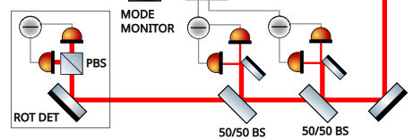
<figcaption class="paper-figure-caption"><b>Fig 1.</b> FIG. 1: A schematic diagram of the experimental setup used to levitate nanoparticles in the radially polarized beam trap. The radial beam is created by a vortex plate (VP) and is characterized by a polarizer and a CCD (mode monitor) when the flip mirror is raised. After characterization, the radial beam is sent to an aspherical lens with high numerical aperture (NA = 0.77) to form the optical trap. The scattered light from the nanopar- ticle is collected by a collector lens (NA = 0.55). A bal- anced detection scheme is used to measure displacement of the nanoparticle and to cool the center of mass mo- tion along the transverse x and axial z trap axes. A third channel (ROT DET) is also used...</figcaption>
</figure>
<figure class="paper-figure-card">
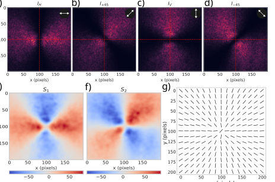
<figcaption class="paper-figure-caption"><b>Fig 2.</b> FIG. 2: Polarization characterization of the radially po- larized beam. The radial beam is filtered by rotating a polarizer from 0,45 , 90 and 135 degrees when positioned in front of the CCD camera. It generates four polariza- tion states a) IH, b) I+45, c) IV and d) I−45. The Stokes vectors e) S1 = IH −IV and f) S2 = I+45 −I−45 are computed and the reconstructed polarization map of the radial beam is shown in g).</figcaption>
</figure>
<figure class="paper-figure-card">
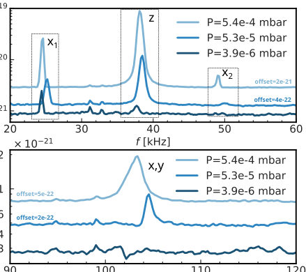
<figcaption class="paper-figure-caption"><b>Fig 3.</b> FIG. 4: Recorded power spectral densities under feed- back cooling for a levitated particle with nominal radius R = 78 nm at three different pressures. Motion is cooled to the noise floor level. The nonlinear peak denoted by X1 dominates the spectra at P = 3.9 × 10−6 mbar.</figcaption>
</figure>
<figure class="paper-figure-card">

<figcaption class="paper-figure-caption"><b>Fig 4.</b> FIG. 3: a) Transverse intensity for different filling factor 1/β0. Low filling factors prevent formation of a central intensity maximum. b) Transverse intensity profile for 1/β0 = 2.5 assumed in the simulations.</figcaption>
</figure>
<figure class="paper-figure-card">
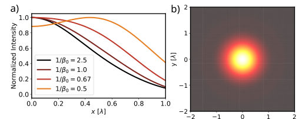
<figcaption class="paper-figure-caption"><b>Fig 5.</b> Figure 4 shows the experimental displacement power spectrum density (PSD) when cold damping is applied along the x and z axes. Plots for three different pres- sures are shown. Unlike trapping in a linearly polar- ized Gaussian beam trap, which has three trap frequen- cies, the radially polarized beam trap is characterized</figcaption>
</figure>
</div>

<p><strong>Summary.</strong> The authors demonstrated optical levitation and feedback cooling of a nanoparticle trapped by a radially polarized vector beam (RVB). By utilizing RVBs, they created tighter optical potentials than conventional traps, achieving cooling temperatures in the millikelvin range. This work advances the use of structured light for high-precision levitated quantum optomechanics experiments.</p>
<p><strong>Why it may be interesting.</strong> This work directly addresses the experimental realization of quantum control in mechanical oscillators by using structured light, which is a key area bridging quantum optics and cavity QED.</p>
<details>
<summary>Detailed structure</summary>
<p><strong>Main problem.</strong> To develop optical traps that overcome the heating limitations of conventional Gaussian beam traps for use in levitated quantum optomechanics.</p>
<p><strong>Main result.</strong> The experiment successfully demonstrated feedback cooling of a nanoparticle trapped in a radially polarized vector beam (RVB) to the mK temperature range.</p>
<p><strong>Method.</strong> Cold-damping feedback was applied using FPGA control based on measured particle displacement to cool the center-of-mass motion in radial and axial directions.</p>
<p><strong>Model / system.</strong> The system involves a silica nanoparticle levitated in a high vacuum, trapped by a radially polarized vector beam (RVB) generated using a vortex wave plate and aspheric lens.</p>
<p><strong>Key observables.</strong> Center-of-mass temperatures ($T_{CM,X}, T_{CM,Z}$), trap frequencies ($\Omega_z, \Omega_x$), and the Power Spectrum Density (PSD) of the particle motion.</p>
<p><strong>Important parameters / regimes.</strong> Cooling temperatures in the mK range; trap frequencies like $2\pi 	imes 38 	ext{ kHz}$ and $2\pi 	imes 104 	ext{ kHz}$; vacuum pressure ($10^{-6} 	ext{ mbar}$).</p>
<p><strong>Assumptions / limitations.</strong> The analysis assumes the trapping potential is determined by the intensity gradient, and the detection system response is linear for calibration purposes.</p>
<p><strong>Figures summary.</strong> Figures show the experimental setup, polarization characterization of the RVB, transverse intensity profiles for varying pupil filling factors, and the PSD measurements demonstrating cooling effects.</p>
<p><strong>Paper structure.</strong> The paper details the experimental setup, the generation and characterization of the RVB trap, the implementation of cold-damping feedback, and the measurement of cooling performance and nonlinear dynamics.</p>
</details>
<details>
<summary>Abstract</summary>
<p>We demonstrate optical levitation and feedback cooling of a silica nanoparticle (radius = 78~nm) trapped within a radial vector beam (RVB) in high vacuum. Radial vector beams, when focused by a high-NA lens, produce a smaller focal spot than conventional Gaussian beams, yielding tighter optical potentials and potentially reduced photon-recoil heating rates. A vortex wave plate was used to generate the RVB using an aspheric lens (NA = 0.77) to form the trap. Cold-damping feedback was used to cool the center of mass motion in the radial and axial trap directions to temperatures in the mK range. At higher temperatures and pressures, additional trap frequencies arising from the nonlinear RVB optical potential are observed. This demonstration is a step toward exploiting structured light for levitated quantum optomechanics where these traps can be used to suppress bulk and motional heating.</p>
</details>
<p><sub><a href="#top">↑ back to top</a></sub></p>

<p><a id="paper-2609.31043"></a></p>
<h3 id="single-shot-coherent-process-tomography-and-mid-infrared-polarimetry-with-undetected-photons"><a href="http://arxiv.org/abs/2609.31043v1">Single-shot coherent process tomography and mid-infrared polarimetry with undetected photons</a></h3>
<p><strong>Authors:</strong> Marthe Zeja, Wen-Zhe Yan, Zhibo Hou, Sven Ramelow<br>
<strong>Type:</strong> experiment · <strong>Category:</strong> other · <strong>PDF:</strong> <a href="https://arxiv.org/pdf/2609.31043v1">https://arxiv.org/pdf/2609.31043v1</a><br>
<strong>Analysis basis:</strong> full PDF text, analyzed in chunks
<strong>Topic relevance:</strong> 🔥 <code>quantum optics experiment</code> <strong>4/5</strong> · <code>interference shaping light</code> <strong>3/5</strong> · <code>quantum measurements</code> <strong>3/5</strong></p>
<div class="figure-strip-hint">↔ Scroll figures horizontally</div>
<div class="paper-figures-scroll">
<figure class="paper-figure-card">
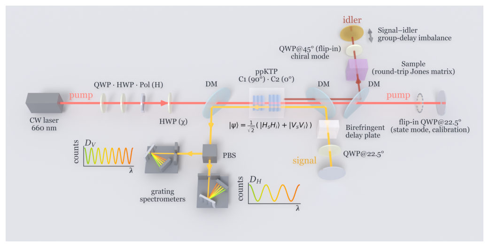
<figcaption class="paper-figure-caption"><b>Fig 1.</b> FIG. 1. Folded nonlinear interferometer for single-shot coherent process tomography. A continuous-wave laser at 660 nm is prepared in H by a quarter-wave plate, a half-wave plate and a polarizer; a further half-wave plate sets the pump angle χ, which equals 45◦at the balanced working point (Sec. VI D). The crossed type-0 crystals (periodically poled KTiOPO4, ppKTP) generate signal–idler pairs by parametric down-conversion and are double-passed: the pump meets C1 (90◦, generating the V pair) first and C2 (0◦, generating the H pair) second; see App. A. The state label is the first-pass pair at the balanced point χ = 45◦[Eq. (4), with κ absorbed into the calibration constants of App. A]....</figcaption>
</figure>
<figure class="paper-figure-card">
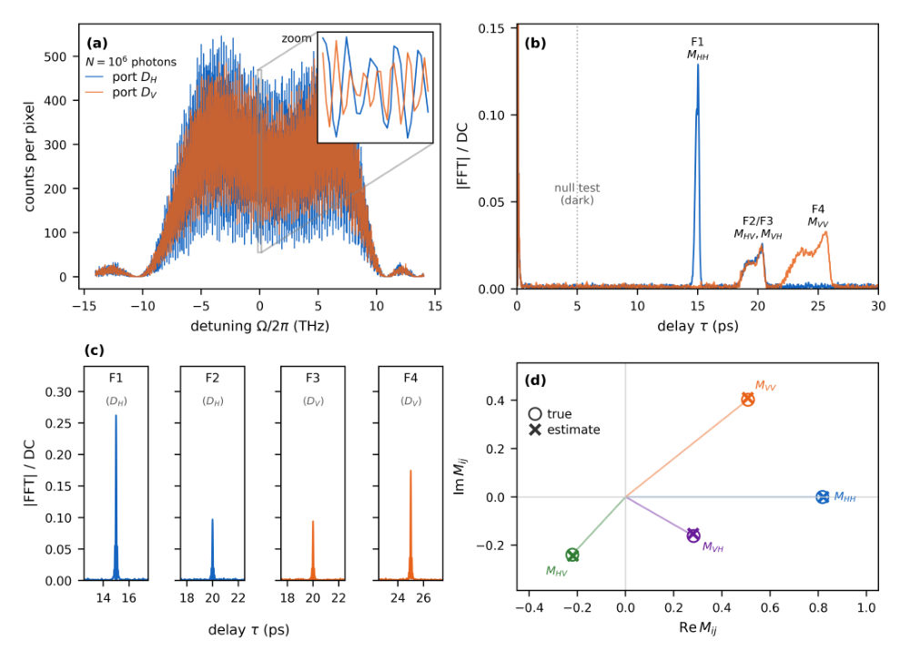
<figcaption class="paper-figure-caption"><b>Fig 2.</b> FIG. 2. Single-frame readout, simulated end to end with the crystal dispersion of Sec. V C included. The carriers sit at the nominal placement ∆τ = 15 ps and d1 = 5 ps, net of the crystal walk-off (App. B). The channel is a generic non-reciprocal contraction (retarder 0.8 rad at 30◦, diattenuation 0.9/0.7, circular rotation 20◦), so all four Jones elements are populated and MHV ̸= MV H. (a) One simulated frame: both spectrometer traces, pixelated at the 20 pm pitch of Table III with a Gaussian instrument function of the same width and per-pixel Poisson noise, N = 106 detected photons per frame over both traces. The spectral envelope is the phase-matching envelope of App. C, side lobes...</figcaption>
</figure>
<figure class="paper-figure-card">
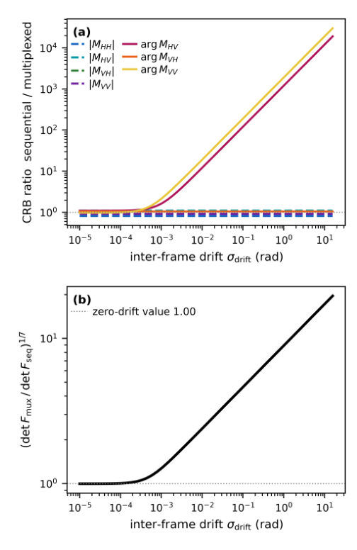
<figcaption class="paper-figure-caption"><b>Fig 3.</b> FIG. 3. Delay-multiplexed against sequential process tomog- raphy at equal photon budget: N = 108 detected photons per campaign, i.e., 100 frames of 106, with Poisson pixel noise and the example channel of Fig. 2. (a) Ratio of the CRBs, sequential over multiplexed, for each of the seven parameters as a function of the inter-frame phase drift σdrift. Beyond the shot-noise floor (about 10−3 rad at this budget) the sequen- tial scheme loses the two phases that connect the columns of M, their bounds growing in proportion to σdrift, while the parameters read within a single frame stay near parity. (b) The same comparison aggregated into the geometric mean (det Fmux/ det Fseq)1/7 over the seven...</figcaption>
</figure>
</div>

<p><strong>Summary.</strong> This paper presents a novel technique for performing coherent process tomography and mid-infrared polarimetry using photons that are never directly measured. By employing a folded nonlinear interferometer and exploiting birefringent walk-off as a frequency multiplexer, the authors read all necessary polarization parameters simultaneously in a single measurement frame. This breakthrough enables broadband, drift-immune characterization of optical channels, extending to depth-resolved polarimetry.</p>
<p><strong>Why it may be interesting.</strong> This work represents a significant advancement in quantum optics measurement techniques, providing a robust, single-shot, and drift-immune method for characterizing complex quantum channels using non-detected light.</p>
<details>
<summary>Detailed structure</summary>
<p><strong>Main problem.</strong> Developing a method for single-shot coherent process tomography and mid-infrared polarimetry using light that is never directly detected (undetected photons).</p>
<p><strong>Main result.</strong> The authors demonstrate a protocol that reconstructs all seven parameters of the beam's round-trip Jones matrix in a single spectrometer frame, achieving wavelength-resolved mid-IR polarimetry.</p>
<p><strong>Method.</strong> A folded nonlinear interferometer pumped diagonally is used, where birefringent group-delay walk-off acts as a frequency multiplexer to read all Jones parameters simultaneously via a single Fourier transform.</p>
<p><strong>Model / system.</strong> The experiment utilizes a folded nonlinear interferometer with a diagonally pumped crossed-crystal source (ppKTP) to probe the unknown channel's round-trip Jones matrix M. The measurement transfers mid-infrared information onto silicon-friendly wavelengths.</p>
<p><strong>Key observables.</strong> The full complex Jones spectrum M(lambda), including all four moduli and three relative phases across the bandwidth.</p>
<p><strong>Important parameters / regimes.</strong> The seven real parameters defining the Jones matrix M; the spectral bandwidth (3.5-4.2 microns); and the photon number N for precision analysis.</p>
<p><strong>Assumptions / limitations.</strong> The technique relies on the multiplexing capability provided by birefringent group-delay walk-off and assumes the validity of the Fisher-information analysis for this novel measurement scheme.</p>
<p><strong>Figures summary.</strong> Figure 1 illustrates the folded nonlinear interferometer setup, detailing components like QWP/HWP and the crossed-crystal source.</p>
<p><strong>Paper structure.</strong> The paper introduces the problem of single-shot tomography, details the folded interferometer setup and the multiplexing mechanism, presents the results for reconstructing the full Jones spectrum, and concludes with a Fisher-information analysis comparing the new method to sequential protocols.</p>
</details>
<details>
<summary>Abstract</summary>
<p>Measurements with undetected photons infer properties of a probe beam that is never detected, transferring mid-infrared information onto silicon-friendly wavelengths. Tomography in this paradigm has so far relied on switched settings or scanned phases, referenced across a drift-sensitive campaign; no protocol reads all Jones parameters from one frame. We show that a folded nonlinear interferometer with a diagonally pumped crossed-crystal source performs coherent process tomography of the undetected beam in a single spectrometer frame: it reconstructs all seven parameters of the beam's round-trip Jones matrix, the coherent part of the channel. Birefringent group-delay walk-off, normally a calibration nuisance, acts as a frequency multiplexer: each Jones-matrix element is assigned its own carrier, a spectral fringe period paired with a detector port. Because the multiplexing exploits the down-conversion bandwidth rather than merely tolerating it, a single Fourier transform per detector trace returns all four moduli and all three relative phases across that bandwidth, i.e., the full round-trip Jones spectrum up to a global phase, with no scan or setting change (after a one-time reference frame). Simultaneity makes every relative phase immune to common-mode drift, and a dark carrier, a self-interference term that unitarity forces to vanish, provides a built-in null test. For realistic parameters of a periodically poled KTP source the scheme yields wavelength-resolved mid-infrared polarimetry across 3.5-4.2 microns (~80 spectral points per Jones element) on a silicon camera, extending to depth-resolved Jones matrices, i.e., polarization-sensitive optical coherence tomography with undetected photons. A Fisher-information analysis, the first we are aware of in undetected-photon tomography, sets the precision budget and compares delay multiplexing to sequential protocols at equal photon number.</p>
</details>
<p><sub><a href="#top">↑ back to top</a></sub></p>

<p><a id="paper-2609.31267"></a></p>
<h3 id="electron-lattice-potentials-for-ultracold-atoms-using-circular-rydberg-orbitals"><a href="http://arxiv.org/abs/2609.31267v1">Electron lattice potentials for ultracold atoms using circular Rydberg orbitals</a></h3>
<p><strong>Authors:</strong> Aileen A. T. Durst, Einius Pultinevicius, Homar Rivera-Rodríguez, Tilman Pfau, Matthew T. Eiles, Florian Meinert<br>
<strong>Type:</strong> theory · <strong>Category:</strong> other · <strong>PDF:</strong> <a href="https://arxiv.org/pdf/2609.31267v1">https://arxiv.org/pdf/2609.31267v1</a><br>
<strong>Analysis basis:</strong> full PDF text, analyzed in chunks
<strong>Topic relevance:</strong> 🔥 <code>analog quantum simulation</code> <strong>4/5</strong> · <code>Rydberg arrays</code> <strong>3/5</strong> · <code>Frenkel-Kontorova</code> <strong>2/5</strong></p>
<div class="figure-strip-hint">↔ Scroll figures horizontally</div>
<div class="paper-figures-scroll">
<figure class="paper-figure-card">
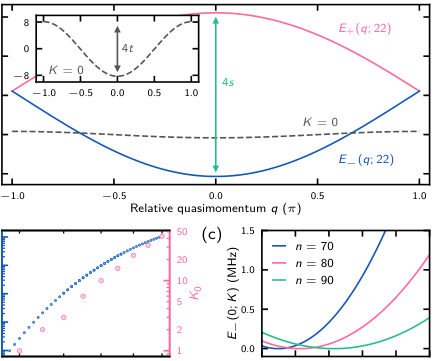
<figcaption class="paper-figure-caption"><b>Fig 1.</b> FIG. 2. Band structure dictating the relative motion of two atoms in the electron lattice. (a) Lowest-band energy dis- persions E±(q; K) for center-of-mass momenta K = 0 and K = 22. The inset shows a zoom into the K = 0 band. Ar- rows indicate the K = 0 bandwidth 4t and the K = 22 band splitting 4s = 4(JℓK)g, respectively. (b) Intralattice tunnel- ing parameter t and center-of-mass angular momentum K0 at which the trimer system has its lowest band energy as a function of principal quantum number n. K0 sets the effec- tive mass of interlattice tunneling dynamics via the interband tunneling JℓK0g. (c) Lowest band energy E−(0; K) as a func- tion of K for exemplary values of n as indicated. For...</figcaption>
</figure>
<figure class="paper-figure-card">
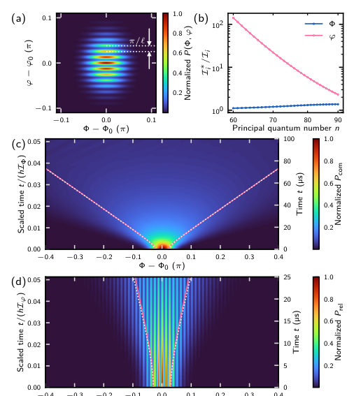
<figcaption class="paper-figure-caption"><b>Fig 2.</b> FIG. 3. Two-atom tunneling dynamics in the electronic lat- tice. (a) Density of the initial state in the combined circular state and tweezer potential after integrating over the elec- tronic degree of freedom for κ/h = 2.06 MHz, Φ0 = π, and φ0 = −π. (b) Ratio of the effective moment of inertia for center-of-mass (blue) and relative (pink) motion in the elec- tronic lattice to the bare moment of inertia without the lat- tice. (c,d) Time evolution of the two-atom correlators Pcom and Prel in the center-of-mass and relative motion after a sud- den removal of the tweezer potential Utw. The solid line indi- cates the fitted rms-width of the numerical data, whereas the dashed line shows the width...</figcaption>
</figure>
<figure class="paper-figure-card">
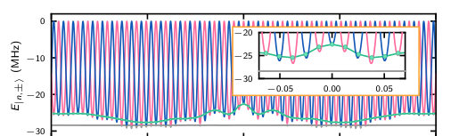
<figcaption class="paper-figure-caption"><b>Fig 3.</b> FIG. 5. Electronic lattice including admixture of hydrogenic states at an electric field F ′. Perturbed eigenenergies of elec- tronic lattice states |n, +⟩(blue) and |n, −⟩(pink) have min- ima modulated with a period of π/2 along φ. Integration over a vibrational ground state at multiples of π/l results in re- duced site-to-site fluctuations (see inset) and slightly reduced well depths. Avoided crossings with |n, k = 0, |m| = n −3⟩ (gray) can be minimized.</figcaption>
</figure>
<figure class="paper-figure-card">
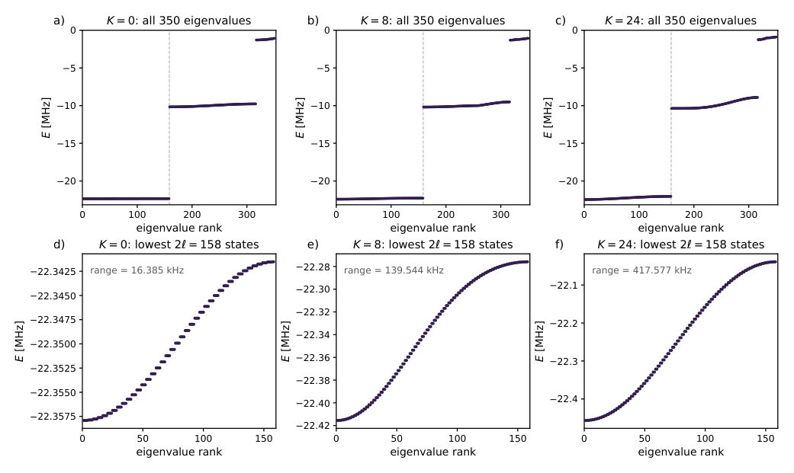
<figcaption class="paper-figure-caption"><b>Fig 4.</b> FIG. 6. Numerically calculated circular-state Rydberg trimer spectra for three different values of the center-of-mass rotational angular momentum K. Panels (a–c) show the lowest 350 energy eigenvalues for n = 80 for K = 0, K = 8, and K = 24, respectively. The vertical dashed line marks position of the first band gap; the lowest band contains 2ℓ= 158 states for ℓ= n −1 = 79. Panels (d–f) show the lowest band alone for the corresponding K values. The bandwidths for each K value are 16.385 kHz, 139.544 kHz, and 417.577 kHz, respectively. The increasing width with K results from the spin-orbit coupling in ˆHK.</figcaption>
</figure>
</div>

<p><strong>Summary.</strong> The authors demonstrate how circular Rydberg electrons can generate a dynamic, standing-wave lattice potential for ultracold atoms. This lattice potential is formed by the electron's matter wave and couples the atomic degrees of freedom. The study predicts correlated tunneling dynamics, opening a pathway to engineer complex many-body interactions in quantum gas experiments.</p>
<p><strong>Why it may be interesting.</strong> This work provides a novel mechanism for creating tunable, dynamic lattice potentials using highly excited Rydberg states, offering a platform to study long-range, electronically mediated atom-atom interactions.</p>
<details>
<summary>Detailed structure</summary>
<p><strong>Main problem.</strong> To realize and investigate an electronic lattice potential for ultracold atoms, where the lattice is formed dynamically by the matter wave of a weakly bound electron, rather than being a static optical lattice.</p>
<p><strong>Main result.</strong> The system exhibits correlated tunneling motion in the electronic lattice, where individual atoms behave as free rotors, but the relative motion is governed by the lattice potential.</p>
<p><strong>Method.</strong> The dynamics are analyzed by deriving an effective low-energy angular Hamiltonian and solving the resulting Bloch Hamiltonian in momentum space.</p>
<p><strong>Model / system.</strong> The system involves ultracold atoms interacting with a single electron prepared in a circular Rydberg state, forming an effective electronic lattice potential via the electron-atom interaction.</p>
<p><strong>Key observables.</strong> Band structure $E_{\pm}(q; K)$, effective moment of inertia ($I^*_\Phi, I^*_\varphi$), and two-atom correlation functions ($P_{com}, P_{rel}$).</p>
<p><strong>Important parameters / regimes.</strong> Electron-atom scattering length ($a_s$), Rydberg principal quantum number ($n$), and the ratio $J/V \sim n m_e / m_a a_0$.</p>
<p><strong>Assumptions / limitations.</strong> The analysis uses the Born-Oppenheimer approximation by averaging over fast radial and axial oscillations, and assumes the azimuthal motion is slow.</p>
<p><strong>Figures summary.</strong> Figures illustrate the electronic standing wave and resulting single/two-atom potentials, the band structure $E_{\pm}(q; K)$ showing tunneling parameters, and the time evolution of two-atom correlators after a quench.</p>
<p><strong>Paper structure.</strong> The paper progresses from deriving the effective angular Hamiltonian from the full trimer Hamiltonian, analyzing the resulting band structure for relative motion, and finally simulating the time evolution of two-atom correlations after switching off the trapping potential.</p>
</details>
<details>
<summary>Abstract</summary>
<p>Recent advances in experiments using individually trapped atoms have enabled precise control over circular Rydberg electrons with exceptionally long lifetimes. We show that these giant and stable electron orbits can form toroidal lattice potentials for ultracold atoms with a period set by the electron's de Broglie wavelength. Unlike conventional static optical lattices, this electron lattice is formed via the electron-atom interaction, which mixes Rydberg circular states with opposite azimuthal phase winding into a standing electronic matter wave. The lattice phase is thereby intrinsically coupled to the atom position. For a pair of atoms, this results in ballistic tunneling motion in the two-atom spatial correlations along the ring, while the single particle dynamics is essentially free rotation. We simulate the dynamics for an experimentally realistic setting that exploits optical tweezers for individual atom control. Our results open a route toward incorporating long range atom-atom interactions mediated by a single electron and, ultimately, realizing small Bose and Fermi gases confined in these microscopic electronic atom traps.</p>
</details>
<p><sub><a href="#top">↑ back to top</a></sub></p>

<p><a id="paper-2609.31147"></a></p>
<h3 id="rydberg-atom-mediated-strong-antisymmetric-spin-exchange-in-molecular-arrays"><a href="http://arxiv.org/abs/2609.31147v1">Rydberg-Atom-Mediated Strong Antisymmetric Spin Exchange in Molecular Arrays</a></h3>
<p><strong>Authors:</strong> Yunqing Jiao, Jin-Zhu Jiang, Bo-Wen Guan, Jie Ma, Liantuan Xiao, Chi Zhang, Weibin Li, Feng Mei, Suotang Jia<br>
<strong>Type:</strong> theory · <strong>Category:</strong> other · <strong>PDF:</strong> <a href="https://arxiv.org/pdf/2609.31147v1">https://arxiv.org/pdf/2609.31147v1</a><br>
<strong>Analysis basis:</strong> full PDF text, analyzed in chunks
<strong>Topic relevance:</strong> 🔥 <code>Rydberg arrays</code> <strong>4/5</strong> · 🔥 <code>analog quantum simulation</code> <strong>4/5</strong> · <code>QC/QI experiment</code> <strong>1/5</strong></p>
<div class="figure-strip-hint">↔ Scroll figures horizontally</div>
<div class="paper-figures-scroll">
<figure class="paper-figure-card">

<figcaption class="paper-figure-caption"><b>Fig 1.</b> FIG. 1: Rydberg-atom-mediated strong spin-exchange interaction between molecules. (a) Schematic illustration of a hybrid optical tweezer array of ultracold molecules and Rydberg atoms. (b) Dipole-dipole interaction between ultracold molecules (top) with its resulting XY spin-exchange interaction (bottom). (c) Dipole-dipole interaction between Rydberg atoms and ultracold molecules (top) and the corresponding spin-exchange interaction (bottom), with the intermolecular distance being r = r1 + r2. (d) Rydberg-atom-mediated DM spin-exchange interaction between ultracold molecules. (e) Spin-exchange strengths of the DM interaction (solid line) and the XY interaction (dashed line) as a function of...</figcaption>
</figure>
<figure class="paper-figure-card">

<figcaption class="paper-figure-caption"><b>Fig 2.</b> FIG. 2: Fast entangling gates between molecules. (a) Bell-state preparation time varying with intermolecular distance r for molecule-only and hybrid schemes. (b) Bell-state fidelity as a function of detuning ∆and atomic-position uncertainty ∆r, obtained from Lindblad master-equation simulations. The chosen parameters are: r1α = 1.708 µm, r2α = 2.292 µm, corresponding to J1α = 2π × 0.898 MHz, J2α = 2π × 0.372 MHz. (c) SWAP gate time varying with intermolecular distance r and (d) gate fidelity for our hybrid scheme. The calculations use r1α = 2.292 µm, r2α = 1.708 µm, r1β = 1.708 µm and r2β = 2.292 µm. (e) Quantum circuit for constructing a CNOT gate through the DM interaction and...</figcaption>
</figure>
<figure class="paper-figure-card">

<figcaption class="paper-figure-caption"><b>Fig 3.</b> FIG. 3: Scalable cluster-state generation via parallel DM interactions. (a) Interaction sequence for generating a one-dimensional cluster state. Starting with all molecules initialized in |+⟩, the sequence first activates the DM interaction simultaneously across all odd-indexed bonds, followed by a second parallel round on all even-indexed bonds, thereby fully connecting the nearest-neighbor molecular qubits and producing the linear cluster state shown in (b). (c) Interaction sequence for generating a two-dimensional square-lattice cluster state. Starting with all molecules initialized in |+⟩, the DM interaction is then applied in four layers: two parallel layers on horizontal bonds,...</figcaption>
</figure>
<figure class="paper-figure-card">

<figcaption class="paper-figure-caption"><b>Fig 4.</b> FIG. 4: Implementation and detection of a non-equilibrium symmetry-protected topological phase via DM interactions. (a) Three-step periodic drive realizing a Z2 non-equilibrium symmetry-protected topological phase using DM interactions. Disordered onsite rotations promote many-body localization, followed by two staggered DM interaction steps acting on odd and even bonds, respectively; the equivalent quantum circuit representation is shown alongside. (b) Normalized bipartite entanglement entropy s(N/2) as a function of interaction parameter DT, distinguishing thermal and localized regimes under periodic driving. (c) Eigenstate-averaged nonlocal string-order diagnostic Ostr, which identifies...</figcaption>
</figure>
</div>

<p><strong>Summary.</strong> This paper presents a method to significantly boost spin-exchange interactions in ultracold molecular arrays by mediating the coupling through highly polarizable Rydberg atoms. This engineered interaction realizes a strong, controllable Dzyaloshinskii-Moriya (DM) type exchange. The results demonstrate that this technique enables fast, high-fidelity quantum gate operations and the simulation of complex topological quantum phases.</p>
<p><strong>Why it may be interesting.</strong> This work directly addresses the bottleneck of weak interactions in molecular quantum simulators by engineering strong, controllable couplings using Rydberg mediators, which is a major theme in modern AMO physics.</p>
<details>
<summary>Detailed structure</summary>
<p><strong>Main problem.</strong> The primary challenge is overcoming the weak spin-exchange couplings in ultracold molecules, which limits the speed of quantum information processing and simulation.</p>
<p><strong>Main result.</strong> The use of Rydberg atoms mediates a strong, effective antisymmetric Dzyaloshinskii-Moriya (DM) spin-exchange interaction, enhancing coupling strength by up to three orders of magnitude.</p>
<p><strong>Method.</strong> The authors employ a two-step Rydberg-mediated protocol and utilize Floquet Hamiltonian theory and the Magnus expansion to engineer desired spin interactions.</p>
<p><strong>Model / system.</strong> The system involves ultracold polar molecules (e.g., NaCs, CaF) whose spins act as qubits, coupled via auxiliary Rydberg atoms placed in an optical tweezer array.</p>
<p><strong>Key observables.</strong> Gate fidelities (e.g., Bell state, SWAP, CNOT), entanglement generation rates, and the coherence of edge spins in topological phases.</p>
<p><strong>Important parameters / regimes.</strong> Interaction strength enhancement (up to $10^3$), detuning ($\Delta$), atomic-position uncertainty ($\Delta r$), and the specific solvable point $DT = 1.5\pi$.</p>
<p><strong>Assumptions / limitations.</strong> The analysis assumes resonant molecular and Rydberg transitions, and for topological analysis, it relies on specific solvable points in the driving sequence.</p>
<p><strong>Figures summary.</strong> Figures illustrate the setup, comparing molecule-only vs. Rydberg-mediated interactions, and show gate performance metrics like Bell-state preparation time and fidelity versus system parameters.</p>
<p><strong>Paper structure.</strong> The paper progresses from establishing the weak coupling problem to introducing the Rydberg-mediated protocol, demonstrating gate operations (Bell, SWAP, CNOT) using the resulting DM interaction, and finally analyzing the realization of non-equilibrium topological phases.</p>
</details>
<details>
<summary>Abstract</summary>
<p>Ultracold molecular systems have recently emerged as a versatile platform for quantum computation and simulation. Spin-exchange interactions arising from direct molecular dipolar interactions constitute the key mechanism for generating quantum entanglement and simulating quantum spin models. However, the relatively small electric dipole moments result in weak spin-exchange couplings, fundamentally limiting the speed of quantum information processing and interaction cycle of many-body dynamics. Here, we introduce a framework that employs Rydberg atoms with large electric dipole moments to mediate strong interactions between molecules in optical tweezer arrays that enables individually laser addressing both the Rydberg atom and molecules. Our result reveals that the mediated coupling can realize an effective molecular spin-exchange interaction with an intrinsic Dzyaloshinskii-Moriya character, with the Rydberg atoms dynamically decoupled from the molecular degrees of freedom, and the effective interaction strength enhanced by up to three orders of magnitude. We further demonstrate its versatility through rapid entanglement generation, high-fidelity two-qubit gate operations, and the realization of non-equilibrium symmetry-protected topological phase with long-lived edge coherence. Our work establishes a route toward strong molecular spin interactions and opens opportunities for fast, scalable quantum information processing and quantum simulation of long-time non-equilibrium quantum many-body physics in optical tweezer arrays of ultracold molecules.</p>
</details>
<p><sub><a href="#top">↑ back to top</a></sub></p>

<p><a id="paper-2609.31049"></a></p>
<h3 id="computational-aberration-retrieval-with-entangled-photons"><a href="http://arxiv.org/abs/2609.31049v1">Computational aberration-retrieval with entangled photons</a></h3>
<p><strong>Authors:</strong> Baptiste Courme, YoonSeok Baek, Hugo Defienne<br>
<strong>Type:</strong> experiment · <strong>Category:</strong> other · <strong>PDF:</strong> <a href="https://arxiv.org/pdf/2609.31049v1">https://arxiv.org/pdf/2609.31049v1</a><br>
<strong>Analysis basis:</strong> full PDF text, analyzed in chunks
<strong>Topic relevance:</strong> 🔥 <code>quantum optics experiment</code> <strong>4/5</strong> · <code>quantum measurements</code> <strong>3/5</strong> · <code>interference shaping light</code> <strong>1/5</strong></p>
<div class="figure-strip-hint">↔ Scroll figures horizontally</div>
<div class="paper-figures-scroll">
<figure class="paper-figure-card">

<figcaption class="paper-figure-caption"><b>Fig 1.</b> FIG. 1. Principle and simulations. (a) An object is illuminated by a source of entangled photon pairs exhibiting strong spatial correlations. In the example considered here, the photons are strongly anti-correlated in the object plane i.e. when a signal photon is detected at position rs, the associated idler photon is detected around position ri ≈−rs. Such illumination can be generated, for example, by placing the object in the Fourier plane of a thin nonlinear crystal illuminated by a large- diameter pump laser. In this configuration, photon pairs are produced via spontaneous parametric down-conversion (SPDC), and the strong spatial anti-correlations are ensured by momentum conservation....</figcaption>
</figure>
<figure class="paper-figure-card">

<figcaption class="paper-figure-caption"><b>Fig 2.</b> FIG. 2. Experimental results of aberration correction. (a) Experimentally measured C+ correlation image in the absence of aberrations. (b, f) Phase masks programmed onto the SLM to artificially induce aberrations in the imaging system. The masks are constructed by superimposing Zernike modes corresponding to defocus and astigmatism for Aberration 1 (b), and by using the phase of complex Gaussian speckle field with a speckle grain size of 150 SLM pixels for Aberration 2 (f). (c, g) Corresponding distorted C+ correlation images measured prior to correction. (d, h) Phase masks displayed on the SLM resulting from the subtraction of the algorithm-retrieved phase from the initially programmed...</figcaption>
</figure>
<figure class="paper-figure-card">

<figcaption class="paper-figure-caption"><b>Fig 3.</b> FIG. 3. Experimental results of adaptive optics. In the presence of aberrations, the intensity image (a) becomes blurred, and the C+ correlation image (d) is distorted. These aberrations are emulated by displaying a phase pattern (e) on the SLM, constructed by superimposing Zernike polynomials for defocus and astigmatism. After applying our approach, the retrieved phase correction is superimposed onto the initial aberration pattern on the SLM, resulting in a nearly flat effective phase profile (g). Consequently, the corrected intensity image (b) is sharp, and the C+ correlation image (f) exhibits a restored sharp central peak. For comparison, the reference intensity image (c) and C+...</figcaption>
</figure>
</div>

<p><strong>Summary.</strong> This paper presents a novel adaptive optics technique that uses the spatial correlations of entangled photons to directly measure and correct optical aberrations. By analyzing the second-order correlation function, the authors achieve aberration retrieval non-iteratively, significantly reducing the measurement burden compared to conventional methods. This offers a quantum-enhanced pathway for high-resolution microscopy in challenging regimes.</p>
<p><strong>Why it may be interesting.</strong> This work bridges quantum optics diagnostics with classical imaging challenges, providing a quantum-enhanced, measurement-efficient tool for wavefront sensing that bypasses traditional iterative optimization bottlenecks.</p>
<details>
<summary>Detailed structure</summary>
<p><strong>Main problem.</strong> Conventional adaptive optics (AO) methods for high-resolution microscopy suffer from measurement burdens that increase with aberration complexity, especially when photon budgets are limited.</p>
<p><strong>Main result.</strong> The authors demonstrate a non-iterative AO correction strategy that successfully retrieves optical aberrations using only a few measurements based on entangled photon correlations.</p>
<p><strong>Method.</strong> The method exploits the second-order correlation function of entangled photon pairs, $C^+$, which is sensitive to aberrations, allowing phase retrieval without iterative optimization or image-based feedback.</p>
<p><strong>Model / system.</strong> The experiment uses entangled photon pairs generated via SPDC and employs a Spatial Light Modulator (SLM) to apply known perturbations to measure the system's transfer function and reconstruct the phase profile.</p>
<p><strong>Key observables.</strong> The second-order intensity correlation function, $C^+$, and the restored sharp correlation peak after correction.</p>
<p><strong>Important parameters / regimes.</strong> The number of required perturbations (as few as 3–5) and the constraint of limited temporal windows.</p>
<p><strong>Assumptions / limitations.</strong> The approach assumes strong spatial correlations in the entangled photon pairs and that controlled modulation via the SLM can encode the necessary phase information.</p>
<p><strong>Figures summary.</strong> Figures illustrate the principle by showing the degradation of the $C^+$ correlation peak due to aberrations and the subsequent restoration of the sharp peak after applying the computationally retrieved phase correction.</p>
<p><strong>Paper structure.</strong> The paper details the physical setup, introduces the correlation-based diagnostic, develops the non-iterative phase retrieval algorithm, and presents experimental validation showing successful aberration correction in both correlation measurements and object imaging.</p>
</details>
<details>
<summary>Abstract</summary>
<p>Adaptive optics (AO) is central to high-resolution microscopy, yet conventional implementations often require repeated correction-and-measurement cycles whose number increases with aberration complexity. This measurement burden can become prohibitive when the available temporal window for correction is short or when photon budgets are constrained. Here, we demonstrate an AO strategy that exploits the spatial correlations of entangled photon pairs to retrieve aberrations directly. By using the second-order correlation function as an aberration-sensitive metric, the required correction can be determined with only a few measurements, without relying on image-based feedback or iterative optimization. This correlation-based approach establishes an efficient framework for AO leveraging quantum light, offering a new route toward quantum-enhanced microscopy in regimes where conventional correction strategies become challenging.</p>
</details>
<p><sub><a href="#top">↑ back to top</a></sub></p>

<p><a id="paper-2609.31067"></a></p>
<h3 id="synthetic-berry-curvature-in-atom-cavity-systems"><a href="http://arxiv.org/abs/2609.31067v1">Synthetic Berry curvature in atom-cavity systems</a></h3>
<p><strong>Authors:</strong> Zheng Tang, Rui-Lin Zhang, Xiaotian Nie, Li Chen, Wei Zheng<br>
<strong>Type:</strong> theory · <strong>Category:</strong> other · <strong>PDF:</strong> <a href="https://arxiv.org/pdf/2609.31067v1">https://arxiv.org/pdf/2609.31067v1</a><br>
<strong>Analysis basis:</strong> full PDF text, analyzed in chunks
<strong>Topic relevance:</strong> 🔥 <code>analog quantum simulation</code> <strong>4/5</strong> · <code>Tavis-Cummings &amp; cavity-many-emitter</code> <strong>3/5</strong> · <code>methods for driven-dissipative</code> <strong>1/5</strong></p>
<div class="figure-strip-hint">↔ Scroll figures horizontally</div>
<div class="paper-figures-scroll">
<figure class="paper-figure-card">

<figcaption class="paper-figure-caption"><b>Fig 1.</b> FIG. 1. Mapping from an atom–cavity system to a synthetic two-dimensional lattice. (a) The physical Hilbert space is the direct product of the cavity photon Fock ladder and many-atom Hilbert space in one-dimensional lattice. The detuning term ∆ˆa†ˆa separates neighboring photon sectors, while cavity-assisted hopping changes the atomic position together with the photon state. (b) In the single-particle representation the basis |i, n⟩forms a synthetic lattice whose horizontal direction is real space and whose vertical direction is the photon-number coordinate. The detuning acts as a uniform electric field En ∝∆along the synthetic direction, and the atomic current is interpreted as a Hall...</figcaption>
</figure>
<figure class="paper-figure-card">

<figcaption class="paper-figure-caption"><b>Fig 2.</b> FIG. 2. Ground-state observables via exact diagonalization. (a,b) Atomic current and mean photon number versus cavity detuning at m/h = 0.1. (c,d) The corresponding quantities versus m/h at ∆/h = 2. The sharp current feature at m/h = 0 follows from the jump of the selected collective synthetic momentum q∗and its slice Hall conductance. The blue data shows the model with the no-Bose-enhancement. Here L = 6, ν = 0.5, δh/h = 0.4 and δm/h = 0.7.</figcaption>
</figure>
<figure class="paper-figure-card">

<figcaption class="paper-figure-caption"><b>Fig 3.</b> FIG. 3. Synthetic band and many-body block structure with- out Bose enhancement. (a) Single-atom lower-band energy E−(q, k), and (b) its Berry curvature. (c) Ground state energy in the q block. The global ground state selects the minimum- energy block q∗, which is indicated by the dashed line. (d) Fixed-q slice Hall conductance obtained from occupied-state Berry curvature. It is not quantized. Here ν = 0.5, m/h = 0.1, δh/h = 0.4 and δm/h = 0.7.</figcaption>
</figure>
<figure class="paper-figure-card">

<figcaption class="paper-figure-caption"><b>Fig 4.</b> FIG. 4. (a) Ground-state collective synthetic momentum q∗ as a function of m/h, obtained by minimizing the half-filled many-body energy over the q blocks. The selected block changes abruptly at m/h = 0. (b) Hall conductance σHall(q∗) evaluated in the ground state block. The jump of q∗pro- duces a cusp-like feature of σHall(q∗) near m = 0. (c) Photon number during a Laughlin-pumping protocol, where a flux is adiabatically threaded through the real-space ring. Here L = 4, ν = 0.5, δh/h = 0.4, δm/h = 0.7, ∆/h = 1.5, and pumping period is TΦ = 20π.</figcaption>
</figure>
</div>

<p><strong>Summary.</strong> This theoretical work investigates atom-cavity systems, demonstrating that mean-field theory fails to predict the correct ground state atomic current. The failure is fundamentally linked to the non-zero Berry curvature arising in a synthetic dimension. The paper establishes synthetic Berry curvature as a key mechanism governing the quantum response, such as the Hall effect, in these coupled systems.</p>
<p><strong>Why it may be interesting.</strong> This work provides a concrete, topological mechanism (synthetic Berry curvature) explaining the breakdown of standard mean-field treatments in interacting quantum systems like cavity QED.</p>
<details>
<summary>Detailed structure</summary>
<p><strong>Main problem.</strong> The paper addresses the failure of mean-field theory in atom-cavity systems when calculating the ground state atomic current, where the mean-field approach incorrectly predicts zero current.</p>
<p><strong>Main result.</strong> The failure is traced to the non-zero Berry curvature in the synthetic dimension spanned by the photon Fock ladder and real space, which the mean-field approximation discards.</p>
<p><strong>Method.</strong> The authors employ a synthetic dimension mapping to treat the system as moving on a synthetic lattice, allowing the calculation of the Berry curvature and the Hall response.</p>
<p><strong>Model / system.</strong> The system is an atom-cavity setup involving spinless fermions on a bipartite chain coupled to a quantized cavity mode. The analysis uses both the full quantum Hamiltonian and a mean-field approximation.</p>
<p><strong>Key observables.</strong> Atomic current (J_x), Berry curvature (Omega), and the Hall response of the cavity detuning.</p>
<p><strong>Important parameters / regimes.</strong> Cavity detuning (Delta), coupling strengths (m, h), and the synthetic momentum (q).</p>
<p><strong>Assumptions / limitations.</strong> The analysis relies on mapping the system to a synthetic 2D lattice and making approximations to isolate the underlying band geometry in momentum space.</p>
<p><strong>Figures summary.</strong> Figures illustrate the mapping to a synthetic lattice, showing how the atomic current and mean photon number vary with detuning, highlighting sharp features.</p>
<p><strong>Paper structure.</strong> The paper first establishes the discrepancy between mean-field and quantum current calculations. It then maps the system to a synthetic dimension, calculates the Berry curvature, and finally relates the finite quantum current to the Hall response mechanism.</p>
</details>
<details>
<summary>Abstract</summary>
<p>In atom-cavity systems, mean field theory is widely used, in which the quantum cavity operator is replaced by a classical amplitude. Then the problem is converted into atoms moving in a self-consistent potential. The mean field treatment captures the physics of cavity mediated interactions, and predicts the self-organized superradiant phase. In this work, however, we show that it fails for certain atom-cavity coupling: it predicts zero ground state atomic current where the fully quantum calculation exhibits a finite one. We find that the origin of this failure is the non-zero Berry curvature in the synthetic dimension spanned by the photon Fock ladder and real space. In this synthetic picture, the atomic current can be understood as Hall response of cavity detuning, whereas mean field collapses this dimension and discards the atom--photon correlations required for its Hall response. The same beyond-mean-field geometry predicts Laughlin-like photon generation under adiabatic flux insertion. Our work identifies synthetic Berry curvature as a concrete mechanism for the breakdown of static mean field in atom--cavity physics.</p>
</details>
<p><sub><a href="#top">↑ back to top</a></sub></p>

<p><a id="paper-2609.30455"></a></p>
<h3 id="critical-escape-dynamics-of-an-active-particle-moving-on-curved-surfaces"><a href="http://arxiv.org/abs/2609.30455v1">Critical escape dynamics of an active particle moving on curved surfaces</a></h3>
<p><strong>Authors:</strong> Maxim Root, Hartmut Löwen, Peter Sollich, Lorenzo Caprini, Alexander P. Antonov<br>
<strong>Type:</strong> theory · <strong>Category:</strong> statistical mechanics · <strong>PDF:</strong> <a href="https://arxiv.org/pdf/2609.30455v1">https://arxiv.org/pdf/2609.30455v1</a><br>
<strong>Analysis basis:</strong> full PDF text, analyzed in chunks
<strong>Topic relevance:</strong> 🔥 <code>non-equilibrium universality</code> <strong>4/5</strong> · <code>Frenkel-Kontorova</code> <strong>1/5</strong> · <code>driven-dissipative phase transition</code> <strong>1/5</strong></p>
<div class="figure-strip-hint">↔ Scroll figures horizontally</div>
<div class="paper-figures-scroll">
<figure class="paper-figure-card">

<figcaption class="paper-figure-caption"><b>Fig 1.</b> FIG. 2. (a) Three-dimensional view of the dynamical motion of an athermal active Brownian particle on the periodic poten- tial U(x, y), with potential maxima colored yellow and min- ima blue. The white isolines correspond to |µ∇U| = v0, where the active velocity matches the magnitude of the gradient- induced drift; while the particle’s position over time is en- coded by the trajectory color. (b) Magnified view of the escape bottleneck in the xy-plane. Here the particle orienta- tion needs to stay within the orientation interval (lime dashed lines) for a successful escape. The color map on the right cor- responds to the time evolution in both panels (a) and (b).</figcaption>
</figure>
<figure class="paper-figure-card">

<figcaption class="paper-figure-caption"><b>Fig 2.</b> FIG. 1. Sketch of the escape rate k for the motion of the active particle in an external potential (green dashed line) and within a curved manifold with additional gravity (magenta solid line). There is a dynamical transition at v0 = vc (black dotted line) between a localized state (k = 0) and an escape situation (k &gt; 0). In the latter regime, the escape rate follows the universal scaling form for v0 &gt; vc (Eq. (1)) with γ = 3/2 for the potential and γ = 1/2 for the manifold.</figcaption>
</figure>
<figure class="paper-figure-card">

<figcaption class="paper-figure-caption"><b>Fig 3.</b> FIG. 3. (a) Multiple escape events for a large opening pa- rameter δ = 3/4 in the deterministic regime (Dr = 0), for a particle in the potential landscape (dashed green, Eqs. (2)) and in the corresponding identical landscape on the manifold with additional gravity (magenta, Eqs. (16)). The initial con- ditions are identical, r(0) = 0, θ = π/8; the difference between the resulting trajectories highlights the impact of geometric contributions from the manifold on the resulting motion. (b) Schematic of an active particle with orientation ˆu moving on a curved manifold M. At point p ∈M, the particle orienta- tion is represented in the local orthonormal basis { ⃗E∥, ⃗E⊥} of the tangent space...</figcaption>
</figure>
<figure class="paper-figure-card">

<figcaption class="paper-figure-caption"><b>Fig 4.</b> FIG. 5. Distribution of escape (first passage) times in semi- log scaling, obtained from numerical simulations of (a) poten- tial gradient, Eq. (2), and (b) manifold, Eq. (16). Parameters used: Dr = 10−4v0/λ, δ = 10−3, U0 = √</figcaption>
</figure>
<figure class="paper-figure-card">

<figcaption class="paper-figure-caption"><b>Fig 5.</b> FIG. 4. Escape rate k for various opening parameters δ on (a) a linear scale and (b) as ln(−ln(k⟨tw⟩)) vs ln δ, where the slope yields the exponent γ in the scaling (1) k⟨tw⟩∼ exp  −δ−γ ; plotted for potential gradient (dashed green) and manifold (solid magenta) obtained analytically (Eq. (29) with Eq. (50) for potential gradient and Eq. (51) for manifold). The prefactors of the exponential laws are adjusted to match the numerical data (dots), with the resulting agreement in the scaling trends supporting the analytical predictions. Panel (a) reveals faster escape from the manifold, while panel (b) makes the characteristic exponents of Eq. (1) apparent. Parameters used: Dr = 10−4v0/λ, and...</figcaption>
</figure>
</div>

<p><strong>Summary.</strong> This paper analyzes how active particles escape confinement, comparing motion in a simple potential well to motion on a curved surface under gravity. It finds that the critical escape rate follows universal scaling laws, with the exponent changing significantly depending on whether the geometry is flat or curved. This highlights that surface curvature fundamentally alters the dynamics of self-propelled matter.</p>
<p><strong>Why it may be interesting.</strong> The study of non-equilibrium escape dynamics and the role of geometry (curvature) in modifying transport rates is highly relevant to understanding energy landscapes and barrier crossing in complex quantum or classical systems.</p>
<details>
<summary>Detailed structure</summary>
<p><strong>Main problem.</strong> The paper investigates the critical dynamics governing the escape of active particles from metastable states, comparing motion in a simple potential gradient versus motion constrained on a curved manifold.</p>
<p><strong>Main result.</strong> The critical escape rate exhibits universal scaling laws, yielding distinct exponents ($\gamma=3/2$ for potential, $\gamma=1/2$ for curved manifold) that reveal how surface geometry modifies activity-driven escape dynamics.</p>
<p><strong>Method.</strong> The study employs theoretical derivations based on the Fokker-Planck equation, analyzing the escape rate as the lowest eigenvalue, and comparing these results with numerical simulations.</p>
<p><strong>Model / system.</strong> The model consists of Active Brownian Particles (ABPs) self-propelled on either a 2D external potential $U(\mathbf{r})$ or a curved manifold $M$ defined by a height function $h(x, y)$, subjected to external forces like gravity.</p>
<p><strong>Key observables.</strong> Escape rate ($k$), Mean First Passage Time ($\langle	au
angle$), and the scaling exponent ($\gamma$).</p>
<p><strong>Important parameters / regimes.</strong> Self-propulsion velocity ($v_0$), critical velocity ($v_c$), and the opening parameter ($\delta = (v_0 - v_c)/v_0$).</p>
<p><strong>Assumptions / limitations.</strong> The analysis assumes the absence of translational noise in the critical scaling regime and utilizes approximations near the escape bottleneck ($ heta_c \ll 1$).</p>
<p><strong>Figures summary.</strong> Figures illustrate the escape rate dependence on $v_0$, showing the transition at $v_c$ and the characteristic scaling forms with different exponents for the two geometries.</p>
<p><strong>Paper structure.</strong> The paper first establishes the general problem in two settings (potential vs. manifold), derives the equations of motion, analyzes the escape probability using the Fokker-Planck formalism, and concludes by comparing the resulting universal scaling exponents.</p>
</details>
<details>
<summary>Abstract</summary>
<p>On the macroscopic scale, active (self-propelled) objects moving through complex environments are often subject to effects arising from both the curvature of the surrounding surface and external influences such as gravity. We study the Kramers escape problem for active Brownian particles in two settings: motion in an external potential driven solely by gradient forces, and motion on a curved manifold subject to an additional constant gravitational force. In the absence of translational noise, a sharp dynamical transition occurs when the self-propulsion velocity $v_0$ reaches a critical velocity $v_c$ required for an escape. Above this threshold, the escape rate $k$ follows a universal scaling form, $k \propto \exp\left[-\mathrm{const}(v_0-v_c)^{-γ}\right]$, with an exponent $γ=3/2$ for the escape in a potential and $γ=1/2$ for the escape on a curved manifold in the presence of gravity. These distinct exponents reveal how the interplay of activity, surface curvature, and gravity determines the critical escape dynamics. Our theoretical predictions are verified by numerical simulations.</p>
</details>
<p><sub><a href="#top">↑ back to top</a></sub></p>

<p><a id="paper-2609.30374"></a></p>
<h3 id="quantum-advantage-in-learning-single-mode-bosonic-channels"><a href="http://arxiv.org/abs/2609.30374v1">Quantum advantage in learning single mode bosonic channels</a></h3>
<p><strong>Authors:</strong> Angela Anna Baiju, Aritra Das, Özlem Erkılıç, Jiayi Qin, Li Gong, Syed M Assad, Ping Koy Lam, Biveen Shajilal, Lorcán O Conlon, Jie Zhao<br>
<strong>Type:</strong> both · <strong>Category:</strong> quantum information and computing · <strong>PDF:</strong> <a href="https://arxiv.org/pdf/2609.30374v1">https://arxiv.org/pdf/2609.30374v1</a><br>
<strong>Analysis basis:</strong> full PDF text, analyzed in chunks
<strong>Topic relevance:</strong> 🔥 <code>quantum optics experiment</code> <strong>4/5</strong> · <code>quantum measurements</code> <strong>2/5</strong></p>
<div class="figure-strip-hint">↔ Scroll figures horizontally</div>
<div class="paper-figures-scroll">
<figure class="paper-figure-card">

<figcaption class="paper-figure-caption"><b>Fig 1.</b> FIG. 1. Exponential quantum learning advantage from a single squeezed mode. (a) General framework for quantum channel learning. A probe state is sent through an unknown channel Λ, measured, and the outcomes are post-processed to infer the channel’s properties. The choice of probe states—classical, squeezed, or entangled states—and the measurement strategy jointly determine the sample complexity: the number of channel uses required to achieve a prescribed learning accuracy. Prior work has established that multi-mode entangled probes can reduce sample complexity exponentially compared to any classical strategy (right panel), but has left open whether such an advantage necessitates...</figcaption>
</figure>
<figure class="paper-figure-card">

<figcaption class="paper-figure-caption"><b>Fig 2.</b> FIG. 2. Experimental schematic. The experiment consists of two stages: state preparation and homodyne detection. In the state preparation stage, squeezed vacuum is generated via parametric down-conversion in a PPKTP crystal inside a bowtie cavity (squeezer). The displacement is introduced by combining the squeezed vacuum with a bright coherent beam on a 98:2 beamsplitter; the coherent beam is phase-modulated by an electro-optic modulator (EOM) driven by a function generator programmed with the desired displacement distribution, implementing the random displacement channel. An auxiliary pho- todetector (PD aux) monitors the displacement beam power and is used to lock the displacement to the...</figcaption>
</figure>
<figure class="paper-figure-card">

<figcaption class="paper-figure-caption"><b>Fig 3.</b> FIG. 3. Hypothesis tesing: exponential advantage in sample complexity. Minimum number of homodyne measure- ments Nmin required to distinguish H0 from H1 with success probability ≥2/3 using the log-likelihood ratio (LLR) decision rule, as a function of peak separation β0. Dashed lines show simulation results and solid markers show experimental data using vacuum probe (red), and squeezed probe with squeezing levels of 4.95 dB, 6.2 dB, 7.69 dB and 8.54 dB. The gray solid line shows the classical lower bound from Theorem 1. At β0 = 4.5, the vacuum probe requires ∼1.5 × 107 samples while a strongly squeezed probe requires only ∼104, a separation of three orders of magnitude that grows...</figcaption>
</figure>
<figure class="paper-figure-card">

<figcaption class="paper-figure-caption"><b>Fig 4.</b> FIG. 4. Full-bandwidth reconstruction of characteristic functions. (a) Experimental characteristic function recon- struction λ(β) whose highest frequency component β0 = 2.5 for a fixed number of homodyne samples to be N = 1 × 103 but using probes of different variances. The solid lines represent the average outcome of 2000 runs of reconstruction task as a function of number of homodyne samples and the shadings are 1σ standard deviation. (b) The same reconstruction task as given in panel (a) at β0 = 2.5 but for a given probe of variance -4.95 dB and varying the number of homodyne samples (N) (c) Minimum number of homodyne measurements Nmin required to estimate λ(β) with success probability...</figcaption>
</figure>
</div>

<p><strong>Summary.</strong> This paper proves that exponential quantum advantages in learning bosonic channels do not necessarily require entanglement or increased system size. By utilizing single-mode squeezing, the authors show that controlling the accessible Fourier bandwidth allows for a dramatic, exponential reduction in the required number of samples for tasks like channel characterization. This identifies bandwidth control as a key, non-entanglement-based quantum resource.</p>
<p><strong>Why it may be interesting.</strong> This work directly addresses the resource quantification in quantum learning, showing that non-entanglement-based resources like controlled bandwidth (squeezing) can yield exponential quantum advantages, which is highly relevant for quantum sensing and estimation protocols.</p>
<details>
<summary>Detailed structure</summary>
<p><strong>Main problem.</strong> The paper investigates whether exponential quantum learning advantages can be achieved in a fixed, unentangled quantum system, specifically when learning the parameters of a single-mode bosonic channel.</p>
<p><strong>Main result.</strong> It demonstrates that single-mode squeezing can provide an exponential reduction in sample complexity compared to vacuum or coherent probes, establishing accessible Fourier bandwidth as a fundamental quantum resource.</p>
<p><strong>Method.</strong> The authors established information-theoretic lower bounds and used quantum estimation theory, comparing the performance of vacuum, coherent, and squeezed probes for tasks like binary hypothesis testing and characteristic-function reconstruction.</p>
<p><strong>Model / system.</strong> The system is a single bosonic mode subjected to an unknown random-displacement channel. The theoretical analysis uses the characteristic function, while the experimental realization involves squeezing generated via parametric down-conversion and homodyne detection.</p>
<p><strong>Key observables.</strong> Sample Complexity ($N$), characteristic function $\lambda(eta)$, Log-Likelihood Ratio (LLR), and the achievable Fourier bandwidth.</p>
<p><strong>Important parameters / regimes.</strong> Squeezing level ($r$), complexity parameter ($eta_0$), and the ratio of sample complexities ($N_{	ext{vac}} / N_{	ext{sq}}$).</p>
<p><strong>Assumptions / limitations.</strong> The analysis relies on approximations like Taylor expansions for the LLR and assumes the ability to implement the random displacement channel and perform homodyne detection.</p>
<p><strong>Figures summary.</strong> Figures illustrate the comparison of probe states (vacuum vs. squeezed) in single-mode learning, showing exponential outperformance of squeezed probes in hypothesis testing and reconstruction tasks.</p>
<p><strong>Paper structure.</strong> The paper progresses from establishing the fundamental question regarding entanglement vs. single-mode advantage, to deriving information-theoretic bounds, and finally presenting both theoretical derivations and experimental validation using homodyne measurements.</p>
</details>
<details>
<summary>Abstract</summary>
<p>Quantum resources can dramatically reduce the data required to learn physical systems, with exponential improvements in sample complexity demonstrated in several quantum learning tasks. However, these advantages have typically relied on quantum resources that scale with problem complexity, most notably increasing system dimension or entanglement. This raises a fundamental question: can exponential quantum learning advantages arise within a fixed, unentangled quantum system? In this paper, we address this question by considering the learning of an unknown random-displacement distribution whose complexity is determined not by the dimensionality of the physical system, but by the Fourier resolution of its features. We show that the quantum-limited noise of vacuum probes progressively obscures high-frequency features, leading to an exponential growth in sample complexity. We establish an information-theoretic lower bound for arbitrary classical-state probes and show that squeezing overcomes this classical limit by extending the accessible Fourier bandwidth. Experimentally, we demonstrate an exponential reduction in sample complexity using squeezed vacuum probes for both binary hypothesis testing and characteristic-function reconstruction. Our results show that a single bosonic mode can exhibit exponential quantum learning advantages without entanglement or an increase in system size, identifying accessible Fourier bandwidth as a fundamentally distinct resource for quantum-enhanced learning.</p>
</details>
<p><sub><a href="#top">↑ back to top</a></sub></p>

<p><a id="paper-2609.31221"></a></p>
<h3 id="distinct-feedback-strength-requirements-for-quantum-state-ensemble-preparation-under-channel-equivalent-monitoring"><a href="http://arxiv.org/abs/2609.31221v1">Distinct Feedback-Strength Requirements for Quantum-State Ensemble Preparation under Channel-Equivalent Monitoring</a></h3>
<p><strong>Authors:</strong> Haitao Huang, Qinglin Zhao, Xiaoyu Li<br>
<strong>Type:</strong> theory · <strong>Category:</strong> quantum information and computing · <strong>PDF:</strong> <a href="https://arxiv.org/pdf/2609.31221v1">https://arxiv.org/pdf/2609.31221v1</a><br>
<strong>Analysis basis:</strong> full PDF text, analyzed in chunks
<strong>Topic relevance:</strong> 🔥 <code>quantum measurements</code> <strong>4/5</strong> · <code>correlated / nonlocal dissipation</code> <strong>1/5</strong></p>
<div class="figure-strip-hint">↔ Scroll figures horizontally</div>
<div class="paper-figures-scroll">
<figure class="paper-figure-card">

<figcaption class="paper-figure-caption"><b>Fig 1.</b> FIG. 1. Same average channel, different feedback scaling. (a) Readout phases vary at fixed discarded-record channel. The solid line carries the system; the dashed complete public record conditions the subsequent Hamiltonian. (b) At δ = 0, successful capture is followed by monitored motion within Md; normal feedback stops. (c) At fixed δ &gt; 0, measurement continually displaces states from Md. Inward feedback maintains a characteristic distance ℓ⊥∼κδ/U at large U. Gray curves depict the same target-family slice in pure-state space, rather than a trajectory. Dots and shading illustrate states and confinement, not sampled data or hard support. The scalings show a sufficient construction in (b)...</figcaption>
</figure>
<figure class="paper-figure-card">

<figcaption class="paper-figure-caption"><b>Fig 2.</b> FIG. 2. Continuous-time resource separation for d = 4. Here Γ = 4, κ = 0.5, and T = 1. (a) Deterministic evaluations of the finite-time all-controller optimum E∗(U, T) (markers and solid lines). Dashed curves are the analytic stationary lower certificates L(U) for δ &gt; 0; the resolved δ = 0 points show the tangent case. Error bars are twice the sum of successive spatial and temporal differences and are resolution proxies, not rigorous error bounds. (b) Inverting L(U) = ϵ gives necessary budgets for the normal instruments (solid). The black dashed curve is the sufficient tangent construction in Eq. (6). The shaded δ = 1 region illustrates the analytically certified same-budget window: the...</figcaption>
</figure>
</div>

<p><strong>Summary.</strong> This theoretical work distinguishes the resource requirements for preparing a quantum state ensemble based on the specific measurement readout used, even if the overall average channel is the same. It proves a dramatic separation in required feedback strength between different monitoring types. This highlights that the measurement process itself dictates the necessary control resources for high-fidelity quantum state preparation.</p>
<p><strong>Why it may be interesting.</strong> It provides fundamental theoretical bounds on the resources needed for quantum control under measurement, which is crucial for understanding realistic quantum feedback protocols in quantum optics and open quantum systems.</p>
<details>
<summary>Detailed structure</summary>
<p><strong>Main problem.</strong> The paper investigates the distinct resource costs (feedback strength) required to prepare a target quantum state ensemble when continuous monitoring is performed, even if the average quantum channel remains unchanged.</p>
<p><strong>Main result.</strong> A significant separation is established: preparing the ensemble under fixed transverse noise requires a strength scaling of $\Theta(\epsilon^{-1})$, whereas tangent noise requires only $O(\sqrt{\log(1/\epsilon)})$, proving measurement realization is part of the control specification.</p>
<p><strong>Method.</strong> The analysis uses the trace-Wasserstein distance to quantify ensemble error and compares resource costs derived from different monitoring regimes (e.g., tangent vs. transverse monitoring).</p>
<p><strong>Model / system.</strong> The model is a multiqubit register undergoing continuous monitoring and feedback control, targeting the uniform ensemble of real-amplitude pure states.</p>
<p><strong>Key observables.</strong> Terminal ensemble error ($\epsilon$), required Hamiltonian strength ($U$), and the feedback strength parameter ($\delta$).</p>
<p><strong>Important parameters / regimes.</strong> The separation is quantified by comparing $C_{d,\delta}(\epsilon)$ for $\delta>0$ versus $\delta=0$.</p>
<p><strong>Assumptions / limitations.</strong> Assumes unit detection efficiency and bounded Hamiltonian feedback; the tangent construction provides an upper bound, but a matching lower bound is noted as open.</p>
<p><strong>Figures summary.</strong> Figures illustrate the scaling difference in required feedback strength between different monitoring scenarios (e.g., sustained vs. normal feedback).</p>
<p><strong>Paper structure.</strong> The paper establishes the problem by comparing monitoring types, derives lower bounds using Wasserstein distance, and culminates in a theorem quantifying the distinct resource scaling based on the measurement readout realization.</p>
</details>
<details>
<summary>Abstract</summary>
<p>Different measurements of the same environment can preserve the average quantum channel yet change the feedback strength needed to prepare a state ensemble. We establish this distinction for a multiqubit register under complete Pauli monitoring, targeting the uniform ensemble of real-amplitude pure states. With unit detection efficiency, public records, and bounded Hamiltonian feedback, fixed transverse noise requires a minimum peak strength proportional to $ε^{-1}$ at distributional error $ε$. Tangent noise instead admits a construction requiring only $O[\sqrt{\log(1/ε)}]$. At fixed preparation time, we determine the optimum over all allowed feedback policies and derive a geometric lower bound beyond radial symmetry. The separation identifies the measurement realization as part of the control-resource specification for monitored ensemble preparation.</p>
</details>
<p><sub><a href="#top">↑ back to top</a></sub></p>

<p><a id="paper-2609.31528"></a></p>
<h3 id="quantum-hpc-workflows-across-multiple-quantum-computing-platforms-two-case-studies"><a href="http://arxiv.org/abs/2609.31528v1">Quantum-HPC Workflows Across Multiple Quantum Computing Platforms: Two Case Studies</a></h3>
<p><strong>Authors:</strong> Philipp Seitz, Miwako Tsuji, John Children, Yuta Kikuchi, Riku Masui, Juan Pedersen, Kentaro Yamamoto, Ross Duncan<br>
<strong>Type:</strong> both · <strong>Category:</strong> quantum information and computing · <strong>PDF:</strong> <a href="https://arxiv.org/pdf/2609.31528v1">https://arxiv.org/pdf/2609.31528v1</a><br>
<strong>Analysis basis:</strong> full PDF text, analyzed in chunks
<strong>Topic relevance:</strong> 🔥 <code>QC/QI experiment</code> <strong>4/5</strong> · <code>analog quantum simulation</code> <strong>1/5</strong></p>
<div class="figure-strip-hint">↔ Scroll figures horizontally</div>
<div class="paper-figures-scroll">
<figure class="paper-figure-card">

<figcaption class="paper-figure-caption"><b>Fig 1.</b> Fig. 1: The Quantum-HPC System Overview.</figcaption>
</figure>
<figure class="paper-figure-card">

<figcaption class="paper-figure-caption"><b>Fig 2.</b> Fig. 2: The Biomolecular Excited States Workflow. (a) Overview: Overview of the workflow structure. Target molecular eigenstates are evaluated in parallel through the workflow (b); depicted as outline. NTChem runs on HPC to compute the initial molecular electronic structure. Other tasks are executed on the workflow server (login node), except for the circuit execution which is submitted to Reimei. The sampled determinants are then merged and diagonalized to obtain the final results. (b) Eigenstate Workflow: The workflow for a single target eigenstate. The workflow generates quantum circuits for state preparation and time evolution. All circuits are compiled in parallel and executed on...</figcaption>
</figure>
<figure class="paper-figure-card">

<figcaption class="paper-figure-caption"><b>Fig 3.</b> Fig. 3: Complete Workflow</figcaption>
</figure>
<figure class="paper-figure-card">

<figcaption class="paper-figure-caption"><b>Fig 4.</b> Fig. 4: QPE Workflow. The dashed boxes indicate sub- workflows which are treated as data, to be used in the higher- order map operation.</figcaption>
</figure>
<figure class="paper-figure-card">

<figcaption class="paper-figure-caption"><b>Fig 5.</b> Fig. 5: VQE Workflow.</figcaption>
</figure>
</div>

<p><strong>Summary.</strong> This paper presents a comprehensive Quantum-HPC hybrid system integrating supercomputers like Fugaku with multiple quantum processors (Quantinuum Reimei and ibm_kobe). It demonstrates the feasibility of complex, end-to-end workflows, such as calculating molecular excited states and ground state energies, by managing data flow across disparate classical and quantum hardware resources.</p>
<p><strong>Why it may be interesting.</strong> The focus on orchestrating workloads across different quantum modalities (trapped-ion vs. superconducting) using a standardized workflow layer is crucial for realizing large-scale quantum simulations in chemistry and materials science.</p>
<details>
<summary>Detailed structure</summary>
<p><strong>Main problem.</strong> Developing and demonstrating a robust Quantum-HPC hybrid workflow management system capable of executing complex quantum algorithms requiring significant classical computation.</p>
<p><strong>Main result.</strong> The work successfully demonstrates two end-to-end, reusable hybrid workflows integrating classical HPC resources (Fugaku) with multiple quantum computing platforms (Quantinuum Reimei and ibm_kobe).</p>
<p><strong>Method.</strong> The authors utilize and adapt the Tierkreis workflow management system, modeling workflows as Directed Acyclic Graphs (DAGs) to coordinate tasks across diverse classical and quantum backends.</p>
<p><strong>Model / system.</strong> The system integrates the Fugaku supercomputer, the trapped-ion QPU Quantinuum Reimei, and the superconducting QPU ibm_kobe. Demonstrations include computing biomolecular excited states and running combined VQE + QPE workflows.</p>
<p><strong>Key observables.</strong> Ground state energy of a simple system, excited states of a biomolecular system, and workflow execution times across different backends.</p>
<p><strong>Important parameters / regimes.</strong> VQE/QPE parameters (e.g., $k_{max}=20$, $\lambda = 0.01\pi/J$), shot counts (e.g., 200 to 20,000 shots), and system sizes for molecular calculations.</p>
<p><strong>Assumptions / limitations.</strong> The scope is limited to the development and demonstration of the workflow management system itself, rather than introducing a novel quantum algorithm or micro benchmark.</p>
<p><strong>Figures summary.</strong> Figures illustrate the system overview connecting Fugaku, Reimei, and ibm_kobe, and detail the structure of the hybrid workflows for molecular simulation and energy estimation.</p>
<p><strong>Paper structure.</strong> The paper introduces the Quantum-HPC system architecture, presents two case studies—biomolecular excited states and combined VQE+QPE—to demonstrate the workflow's capability, and concludes by detailing the modularity and reusability of the workflow management layer.</p>
</details>
<details>
<summary>Abstract</summary>
<p>We describe the Quantum-HPC hybrid system comprising the supercomputer Fugaku, the QPUs Quantinuum Reimei and ibm_kobe, and the Tierkreis hybrid workflow software. We present two demonstrations of the system at work. In the first, we compute the excited states of a biomolecular system using Fugaku and Reimei (simulator) to handle classical and quantum parts of the workflow respectively. In the second, Fugaku coordinates Reimei and ibm_kobe working together in a combined VQE + QPE workflow to compute the ground state energy of a simple system.</p>
</details>
<p><sub><a href="#top">↑ back to top</a></sub></p>

<p><a id="paper-2609.31311"></a></p>
<h3 id="residual-fisher-information-in-measurement-error-uncertainty"><a href="http://arxiv.org/abs/2609.31311v1">Residual Fisher Information in Measurement-Error Uncertainty</a></h3>
<p><strong>Authors:</strong> Masayuki Ohzeki, Taiga Suzuki<br>
<strong>Type:</strong> theory · <strong>Category:</strong> other · <strong>PDF:</strong> <a href="https://arxiv.org/pdf/2609.31311v1">https://arxiv.org/pdf/2609.31311v1</a><br>
<strong>Analysis basis:</strong> full PDF text, analyzed in chunks
<strong>Topic relevance:</strong> 🔥 <code>quantum measurements</code> <strong>4/5</strong> · <code>Keldysh / 2PI / non-Gaussian methods</code> <strong>1/5</strong></p>
<div class="figure-strip-hint">↔ Scroll figures horizontally</div>
<div class="paper-figures-scroll">
<figure class="paper-figure-card">

<figcaption class="paper-figure-caption"><b>Fig 1.</b> Low-resolution page preview, page 2</figcaption>
</figure>
<figure class="paper-figure-card">

<figcaption class="paper-figure-caption"><b>Fig 2.</b> Low-resolution page preview, page 3</figcaption>
</figure>
<figure class="paper-figure-card">

<figcaption class="paper-figure-caption"><b>Fig 3.</b> Low-resolution page preview, page 4</figcaption>
</figure>
</div>

<p><strong>Summary.</strong> This paper develops a theoretical framework to decompose the total measurement error in quantum estimation into two distinct physical components: intrinsic instrument loss and record-restriction loss. By analyzing the structure of the error matrix, it provides a deeper understanding of how measurement limitations arise from both the physical apparatus and the information retained in unread quantum residuals. This has broad implications for quantum sensing and information theory.</p>
<p><strong>Why it may be interesting.</strong> This work provides a rigorous, fundamental decomposition of measurement uncertainty in quantum estimation, which has implications for understanding the limits of sensing in open quantum systems and quantum metrology.</p>
<details>
<summary>Detailed structure</summary>
<p><strong>Main problem.</strong> The paper analyzes the excess estimation error in quantum measurements, specifically decomposing the measurement error uncertainty derived from the Watanabe-Sagawa-Ueda (WSU) formulation.</p>
<p><strong>Main result.</strong> The total measurement error separates exactly into two positive semi-definite components: intrinsic instrument loss ($\Delta_{inst}$) and record-restriction loss ($\Delta_{rec}$), providing a fundamental decomposition of measurement uncertainty.</p>
<p><strong>Method.</strong> The analysis uses quantum information theory tools, relating the error area derived from the full classical-quantum output to bounds involving residual quantum states and Fisher information matrices.</p>
<p><strong>Model / system.</strong> The framework applies to general quantum measurements described by POVMs and quantum instruments, illustrated by an example of single-mode displacement sensing using quadratures (Q and P) via a beam splitter.</p>
<p><strong>Key observables.</strong> Measurement Error ($\Delta_{WSU}$), Intrinsic Instrument Loss ($\Delta_{inst}$), Record-Restriction Loss ($\Delta_{rec}$), Quantum Error Area ($B_{AB}$), and various error product bounds ($\epsilon_Y(A)\epsilon_Y(B)$).</p>
<p><strong>Important parameters / regimes.</strong> The reflectivity $\kappa$ of the beam splitter, which controls the magnitude of the residual information.</p>
<p><strong>Assumptions / limitations.</strong> The analysis assumes the existence of a common estimable support for the relevant Fisher matrices, and the decomposition formulas rely on the non-singularity of the record Fisher matrix $J_Y$ for explicit forms.</p>
<p><strong>Figures summary.</strong> Not specified in the notes, but the structure implies showing the hierarchy of error determinants and the saturation of the residual-improved bounds in the displacement sensing example.</p>
<p><strong>Paper structure.</strong> The paper establishes the decomposition theorem for the WSU error matrix, proves the error-area hierarchy relating record-only bounds to the full quantum bound, and then applies this framework to a concrete example (displacement sensing) to demonstrate saturation.</p>
</details>
<details>
<summary>Abstract</summary>
<p>Measurement error in the Watanabe-Sagawa-Ueda formulation is the excess estimation error of a classical record over the quantum statistical limit. We show that, at the quantum-instrument level, this excess has an exact decomposition. The record-only error matrix equals a residual-aware error matrix plus a positive Schur-complement term fixed by Fisher information left in the unread post-measurement system. Thus measurement error separates into intrinsic instrument loss and record-restriction loss</p>
</details>
<p><sub><a href="#top">↑ back to top</a></sub></p>
<hr>
<p>
<a href="index.html">← Index</a>
 · <a href="papers_02.html">Next →</a>
</p>
<hr>

</body>
</html>
